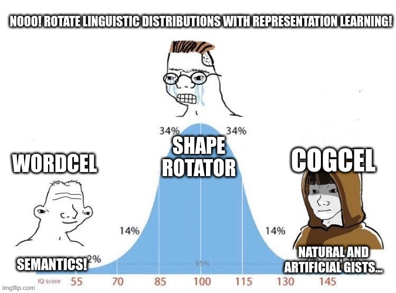

How to code a google scraper in 20ish lines of R code
Brainstorm seed keywords which you have to create content for by your very business model. Every brand should be seen as an entrepreneurial undertaking, including your personal brand. Your interests, talents and skill-marketability act as business model.
Install RSelenium and Selenium
I assume you can read basic R code and that you don’t get nightmares from the mere thought of the terminal. Two optinos to setup RSelenium are to install the Selenium server java executable. Get one here: #https://selenium-release.storage.googleapis.com/index.html
Alternatively we can use a Docker container. The debug version of the container allows you to use a vncviewer to see and interact with the browser.
This docker command fires it up:
docker run -d -p 4445:4444 -p 5901:5900 selenium/standalone-chrome-debug:latest## 45c8aa7cbb24c56707e230d9ad2cd35ad94ba35203daab8fee9f2910f5d4d0d3The VNC server address is 127.0.0.1:5901, password is “secret”

If you need more details, refer to the excellent official documentation: https://docs.ropensci.org/RSelenium/articles/basics.html
You can download the web drivers for your browser (geckodriver/chromedriver) or jar via the library or manually beforehand with your Linux package manager. Docker is usually easier.
pacman::p_load(RSelenium, rvest, Rcrawler, tidyverse, data.table, tidytable, tidytext, reticulate, twinning, fastrtext, wordVectors, udpipe)
#get the selenium server running
remDr <- remoteDriver(
remoteServerAddr = "localhost",
port = 4445L,
browserName = "chrome"
)
Sys.sleep(1)
remDr$open(silent = TRUE)The browser has started

We can now navigate to startpage. We will scrape Startpage instead of Google, because… intuition!
Dynamic webpages and stuffs. If the job is not ultra huge, I don’t want to check if I need to render javascript generated pages or not, so I use a browser anyway. Startpage yields Google results, which are not biased by your search history and tolerates a bit of scraping.
startpage_url <- function(search_terms){
search_terms <- search_terms
query <- str_replace_all(search_terms, " ", "%20")
url <- paste0("https://www.startpage.com/sp/search?query=", query)
url
}
q <- "how to generate document embeddings"
google_this <- startpage_url(q)
remDr$navigate(google_this)
Sys.sleep(30)Note we won’t heavily mine the search engine, we’ll just collect a few results (for that there are scalable, dedicated services). But more than enough to expand our keywords.
Alternatively to RSelenium, you an also use webscraper.io. To reuse the script with more automation, you will want to write a bit of code. Yet I find webscraper.io has the best css selector selection tool, less fiddely than SelectorGadget.
Now let’s get the search results by paginating through the results:
# extract the raw html
get_html <- function(remDr){
remDr$getPageSource() %>% .[[1]] %>% read_html()
}
#css selectors
paginate_button <- "button.next"
result_link <- "a.w-gl__result-url"
result_title <- "div.w-gl__result-second-line-container"
result_description <- "p.w-gl__description"
#loop through and collect search results
search_results_all <- data.table(title_result=c(), description_result=c(), link_result=c())
check_next <- function(x){remDr$findElement("css", paginate_button)}
next_button_check <- possibly(check_next, otherwise = NA)
next_button_present <- next_button_check()
while (!is.na(next_button_present)){
title <- remDr %>% get_html() %>% html_nodes(result_title) %>% html_text()
description <- remDr %>% get_html() %>% html_nodes(result_description) %>% html_text()
link <- remDr %>% get_html() %>% html_nodes(result_link) %>% html_text()
search_results <- data.table(title_result=title, description_result=description, link_result=link)
search_results_all <- bind_rows(search_results_all, search_results)
next_button <- remDr$findElement("css", paginate_button)
next_button$clickElement()
next_button_present <- next_button_check()
Sys.sleep(10)
}
search_results_all %>% kableExtra::kable()| title_result | description_result | link_result |
|---|---|---|
| Document Embedding Techniques - Towards Data Science | 9 Sept 2019 … A common supervised method to produce document embeddings uses various neural network architectures, learning composition operators that map … | https://towardsdatascience.com/document-embedding-techniques-fed3e7a6a25d |
| Chapter 6. Document embeddings for rankings and recommendations | You averaged word embeddings generated by word2vec to obtain a document embedding, a dense representation of a sequence of words, that demonstrated high … | https://livebook.manning.com/book/deep-learning-for-search/chapter-6/ |
| Document Embedding | Papers With Code | We first build individual graphs for each document and then use GNN to learn the fine-grained word representations based on their local structures, which can … | https://paperswithcode.com/task/document-embedding |
| From Word Embedding to Documents Embedding without any Training | 5 Jan 2022 … Concepts extraction: Use concepts to encode documents and generate concept vectors according to CF-IDF format. Training an SVM classifier to … | https://www.analyticsvidhya.com/blog/2022/01/from-word-embedding-to-documents-embedding-without-any-training/ |
| Combining Word Embeddings to form Document Embeddings | 24 Sept 2019 … This technique has been proven to work well with text data and traditional algorithms and is also quite explainable. TF-IDF generates features … | https://medium.com/analytics-vidhya/combining-word-embeddings-to-form-document-embeddings-9135a66ae0f |
| Generating Word and Document Embeddings for Sentiment Analysis | 5 Jan 2020 … We try out the combinations of contextual, supervised, and dictionary-based approaches, and generate original vectors. We also combine the … | https://arxiv.org/abs/2001.01269 |
| A guide to building document embeddings - Part 2 - Radix’s AI | 26 Mar 2021 … All of the former approaches start from word embeddings and pool these in a specific way to form document embeddings. This is a simple (yet … | https://radix.ai/blog/2021/3/a-guide-to-building-document-embeddings-part-2 |
| flair/TUTORIAL_5_DOCUMENT_EMBEDDINGS.md at master - GitHub | Document embeddings are different from word embeddings in that they give you one embedding for an entire text, whereas word embeddings give you embeddings for … | https://github.com/flairNLP/flair/blob/master/resources/docs/TUTORIAL_5_DOCUMENT_EMBEDDINGS.md |
| Document Embedding Techniques | Kaggle | Document Embedding Techniques ; import numpy as np # linear algebra ; import pandas as pd # data processing, CSV file I/O (e.g. pd.read_csv) ; # Input data files … | https://www.kaggle.com/sahib12/document-embedding-techniques |
| A guide to document embeddings using Distributed Bag-of-Words … | 22 Feb 2022 … The document embedding technique produces fixed-length vector representations from the given documents and makes the complex NLP tasks easier … | https://analyticsindiamag.com/a-guide-to-document-embeddings-using-distributed-bag-of-words-dbow-model/ |
| Document Embedding Techniques - Towards Data Science | 9 Sept 2019 … A common supervised method to produce document embeddings uses various neural network architectures, learning composition operators that map … | https://towardsdatascience.com/document-embedding-techniques-fed3e7a6a25d |
| Chapter 6. Document embeddings for rankings and recommendations | You averaged word embeddings generated by word2vec to obtain a document embedding, a dense representation of a sequence of words, that demonstrated high … | https://livebook.manning.com/book/deep-learning-for-search/chapter-6/ |
| Document Embedding | Papers With Code | We first build individual graphs for each document and then use GNN to learn the fine-grained word representations based on their local structures, which can … | https://paperswithcode.com/task/document-embedding |
| From Word Embedding to Documents Embedding without any Training | 5 Jan 2022 … Concepts extraction: Use concepts to encode documents and generate concept vectors according to CF-IDF format. Training an SVM classifier to … | https://www.analyticsvidhya.com/blog/2022/01/from-word-embedding-to-documents-embedding-without-any-training/ |
| Combining Word Embeddings to form Document Embeddings | 24 Sept 2019 … This technique has been proven to work well with text data and traditional algorithms and is also quite explainable. TF-IDF generates features … | https://medium.com/analytics-vidhya/combining-word-embeddings-to-form-document-embeddings-9135a66ae0f |
| Generating Word and Document Embeddings for Sentiment Analysis | 5 Jan 2020 … We try out the combinations of contextual, supervised, and dictionary-based approaches, and generate original vectors. We also combine the … | https://arxiv.org/abs/2001.01269 |
| A guide to building document embeddings - Part 2 - Radix’s AI | 26 Mar 2021 … All of the former approaches start from word embeddings and pool these in a specific way to form document embeddings. This is a simple (yet … | https://radix.ai/blog/2021/3/a-guide-to-building-document-embeddings-part-2 |
| flair/TUTORIAL_5_DOCUMENT_EMBEDDINGS.md at master - GitHub | Document embeddings are different from word embeddings in that they give you one embedding for an entire text, whereas word embeddings give you embeddings for … | https://github.com/flairNLP/flair/blob/master/resources/docs/TUTORIAL_5_DOCUMENT_EMBEDDINGS.md |
| Document Embedding Techniques | Kaggle | Document Embedding Techniques ; import numpy as np # linear algebra ; import pandas as pd # data processing, CSV file I/O (e.g. pd.read_csv) ; # Input data files … | https://www.kaggle.com/sahib12/document-embedding-techniques |
| A guide to document embeddings using Distributed Bag-of-Words … | 22 Feb 2022 … The document embedding technique produces fixed-length vector representations from the given documents and makes the complex NLP tasks easier … | https://analyticsindiamag.com/a-guide-to-document-embeddings-using-distributed-bag-of-words-dbow-model/ |
| [D] What is the current SOTA in document embeddings? - Reddit | 4 Oct 2019 … Most of these will embed sentences out of the box, but you can easily adjust them for entire documents. With transformers, you typically pool … | https://www.reddit.com/r/MachineLearning/comments/dd9ns6/d_what_is_the_current_sota_in_document_embeddings/ |
| Document Embeddings via Recurrent Language Models - CS224d | Document embeddings serve to supply richer semantic content for downstream … Core aspects to the task of document embedding creation need to be improved. | https://cs224d.stanford.edu/reports/GielAndrew.pdf |
| Apply word embeddings to entire document, to get a feature vector | 1 Jul 2016 … How do I use a word embedding to map a document to a feature vector, … | https://stats.stackexchange.com/questions/221715/apply-word-embeddings-to-entire-document-to-get-a-feature-vector |
| Is it possible to use pretrained word embeddings to train document … | Yes, you can generate embeddings for documents from word embeddings. But the key question is what do you need the document embeddings for? | https://www.quora.com/Is-it-possible-to-use-pretrained-word-embeddings-to-train-document-embeddings |
| Kaggle Live Coding: Document Embedding - YouTube | Kaggle Live Coding: Document Embedding | Kaggle ; This week we’re going to be training word embeddings based on the Kaggle forums that we can use … | https://www.youtube.com/watch?v=jvPpxmp_y34 |
| Document Embedding - Orange Data Mining | Document Embedding. Embeds documents from input corpus into vector space by using pre-trained fastText models described in E. Grave et al. (2018). | https://orangedatamining.com/widget-catalog/text-mining/documentembedding/ |
| Document embedding using UMAP - Read the Docs | We are going to embed these documents and see that similar documents (i.e. posts in the same subforum) will end up close together. You can use this embedding … | https://umap-learn.readthedocs.io/en/latest/document_embedding.html |
| models.doc2vec – Doc2vec paragraph embeddings — gensim | 22 Dec 2021 … Learn paragraph and document embeddings via the distributed memory and … seed (int, optional) – Seed for the random number generator. | https://radimrehurek.com/gensim/models/doc2vec.html |
| Using Document Embeddings for Background Linking of News Articles | For our participation, we explored a variety of document embedding representations and proximity measures. Experiments with the 2018 and 2019 validation sets … | https://www.springerprofessional.de/en/using-document-embeddings-for-background-linking-of-news-article/19276188 |
| Introducing a Hierarchical Attention Transformer for document … | document embeddings. Utilizing state-of-the-art word embeddings to generate numerical representations of text documents for classification. VIKTOR KARLSSON. | http://www.diva-portal.org/smash/get/diva2:1415984/FULLTEXT01.pdf |
| [D] What is the current SOTA in document embeddings? - Reddit | 4 Oct 2019 … Most of these will embed sentences out of the box, but you can easily adjust them for entire documents. With transformers, you typically pool … | https://www.reddit.com/r/MachineLearning/comments/dd9ns6/d_what_is_the_current_sota_in_document_embeddings/ |
| Document Embeddings via Recurrent Language Models - CS224d | Document embeddings serve to supply richer semantic content for downstream … Core aspects to the task of document embedding creation need to be improved. | https://cs224d.stanford.edu/reports/GielAndrew.pdf |
| Apply word embeddings to entire document, to get a feature vector | 1 Jul 2016 … How do I use a word embedding to map a document to a feature vector, … | https://stats.stackexchange.com/questions/221715/apply-word-embeddings-to-entire-document-to-get-a-feature-vector |
| Is it possible to use pretrained word embeddings to train document … | Yes, you can generate embeddings for documents from word embeddings. But the key question is what do you need the document embeddings for? | https://www.quora.com/Is-it-possible-to-use-pretrained-word-embeddings-to-train-document-embeddings |
| Kaggle Live Coding: Document Embedding - YouTube | Kaggle Live Coding: Document Embedding | Kaggle ; This week we’re going to be training word embeddings based on the Kaggle forums that we can use … | https://www.youtube.com/watch?v=jvPpxmp_y34 |
| Document Embedding - Orange Data Mining | Document Embedding. Embeds documents from input corpus into vector space by using pre-trained fastText models described in E. Grave et al. (2018). | https://orangedatamining.com/widget-catalog/text-mining/documentembedding/ |
| Document embedding using UMAP - Read the Docs | We are going to embed these documents and see that similar documents (i.e. posts in the same subforum) will end up close together. You can use this embedding … | https://umap-learn.readthedocs.io/en/latest/document_embedding.html |
| models.doc2vec – Doc2vec paragraph embeddings — gensim | 22 Dec 2021 … Learn paragraph and document embeddings via the distributed memory and … seed (int, optional) – Seed for the random number generator. | https://radimrehurek.com/gensim/models/doc2vec.html |
| Using Document Embeddings for Background Linking of News Articles | For our participation, we explored a variety of document embedding representations and proximity measures. Experiments with the 2018 and 2019 validation sets … | https://www.springerprofessional.de/en/using-document-embeddings-for-background-linking-of-news-article/19276188 |
| Introducing a Hierarchical Attention Transformer for document … | document embeddings. Utilizing state-of-the-art word embeddings to generate numerical representations of text documents for classification. VIKTOR KARLSSON. | http://www.diva-portal.org/smash/get/diva2:1415984/FULLTEXT01.pdf |
| 1 Document embedding centroids: new and versatile semantic … | vector space. Here we demonstrate how document embedding models applied to Pubmed abstracts can be used to generate descriptors for compounds. | https://chemrxiv.org/engage/api-gateway/chemrxiv/assets/orp/resource/item/60c751bd0f50dbbbbb397810/original/document-embedding-centroids-new-and-versatile-semantic-descriptors-for-compounds.pdf |
| HistorEx: Exploring Historical Text Corpora Using Word and … | Keywords: Word Embeddings · Document Vectors · Wikidata · Cul- … vectors are generated using the Distributed Memory Model of Paragraph Vectors. | https://www.fiz-karlsruhe.de/sites/default/files/FIZ/Dokumente/Forschung/ISE/Publications/2019-ESWC-D-HistorEx-Exploring-Historical-Text-Corpora.pdf |
| Insights into Word/Document Embeddings - Stack Overflow | 27 Apr 2021 … You know which texts are topically related, from rich human-level language & world understanding, & you want your models to approach that same … | https://stackoverflow.com/questions/67290144/insights-into-word-document-embeddings |
| Improving Document Representations by Generating Pseudo Query … | 1 Aug 2021 … Improving Document Representations by Generating Pseudo Query. Embeddings for Dense Retrieval. Hongyin Tang1,2,∗, Xingwu Sun3,∗, … | https://aclanthology.org/2021.acl-long.392.pdf |
| Document Embedding Models - A Comparison with Bag-of-Words | the creation of document embeddings with the Doc2Vec algorithm based on Word2Vec. These dense distributed latent vectors allow to work with text in a better … | http://www.merlin.uzh.ch/contributionDocument/download/11245 |
| A review of word embedding and document similarity algorithms … | 22 Oct 2017 … We also extend the concept of word embeddings to documents. … in great detail and can retrieve or generate short snippets that answer very … | https://ad-publications.informatik.uni-freiburg.de/theses/Bachelor_Jon_Ezeiza_2017.pdf |
| Text classification with Document Embeddings | method to learn document embedding with neural network architecture … generate document embedding to represent a document and do the document. | http://www.cips-cl.org/static/anthology/CCL-2014/CCL-14-057.pdf |
| P-SIF: Document Embeddings Using Partition Averaging - Vivek Gupta | We observe that partitioning through overlapping clustering algorithms such as GMM generates a better performance compared to partitioning through sparse. | https://vgupta123.github.io/docs/AAAI-GuptaV.3656.pdf |
| How to Cluster Documents Using Word2Vec and K-means | Create Document Vectors from Word Embedding. Now you’ll generate document vectors using the Word2Vec … | https://dylancastillo.co/nlp-snippets-cluster-documents-using-word2vec/ |
| Word embeddings | Text | TensorFlow | The Embedding layer takes the integer-encoded vocabulary and looks up the embedding vector for each word-index. These vectors are learned as the model trains. | https://www.tensorflow.org/text/guide/word_embeddings |
| 1 Document embedding centroids: new and versatile semantic … | vector space. Here we demonstrate how document embedding models applied to Pubmed abstracts can be used to generate descriptors for compounds. | https://chemrxiv.org/engage/api-gateway/chemrxiv/assets/orp/resource/item/60c751bd0f50dbbbbb397810/original/document-embedding-centroids-new-and-versatile-semantic-descriptors-for-compounds.pdf |
| HistorEx: Exploring Historical Text Corpora Using Word and … | Keywords: Word Embeddings · Document Vectors · Wikidata · Cul- … vectors are generated using the Distributed Memory Model of Paragraph Vectors. | https://www.fiz-karlsruhe.de/sites/default/files/FIZ/Dokumente/Forschung/ISE/Publications/2019-ESWC-D-HistorEx-Exploring-Historical-Text-Corpora.pdf |
| Insights into Word/Document Embeddings - Stack Overflow | 27 Apr 2021 … You know which texts are topically related, from rich human-level language & world understanding, & you want your models to approach that same … | https://stackoverflow.com/questions/67290144/insights-into-word-document-embeddings |
| Improving Document Representations by Generating Pseudo Query … | 1 Aug 2021 … Improving Document Representations by Generating Pseudo Query. Embeddings for Dense Retrieval. Hongyin Tang1,2,∗, Xingwu Sun3,∗, … | https://aclanthology.org/2021.acl-long.392.pdf |
| Document Embedding Models - A Comparison with Bag-of-Words | the creation of document embeddings with the Doc2Vec algorithm based on Word2Vec. These dense distributed latent vectors allow to work with text in a better … | http://www.merlin.uzh.ch/contributionDocument/download/11245 |
| A review of word embedding and document similarity algorithms … | 22 Oct 2017 … We also extend the concept of word embeddings to documents. … in great detail and can retrieve or generate short snippets that answer very … | https://ad-publications.informatik.uni-freiburg.de/theses/Bachelor_Jon_Ezeiza_2017.pdf |
| Text classification with Document Embeddings | method to learn document embedding with neural network architecture … generate document embedding to represent a document and do the document. | http://www.cips-cl.org/static/anthology/CCL-2014/CCL-14-057.pdf |
| P-SIF: Document Embeddings Using Partition Averaging - Vivek Gupta | We observe that partitioning through overlapping clustering algorithms such as GMM generates a better performance compared to partitioning through sparse. | https://vgupta123.github.io/docs/AAAI-GuptaV.3656.pdf |
| How to Cluster Documents Using Word2Vec and K-means | Create Document Vectors from Word Embedding. Now you’ll generate document vectors using the Word2Vec … | https://dylancastillo.co/nlp-snippets-cluster-documents-using-word2vec/ |
| Word embeddings | Text | TensorFlow | The Embedding layer takes the integer-encoded vocabulary and looks up the embedding vector for each word-index. These vectors are learned as the model trains. | https://www.tensorflow.org/text/guide/word_embeddings |
| Term-based and Embedding-based Similarity Search in Large … | 17 Aug 2020 … The documents are stored using the bulk-API of elastic. 4.4.2. Creation of an index for embeddings using Faiss. Embeddings were generated in … | https://www.inf.uni-hamburg.de/en/inst/ab/lt/teaching/theses/completed-theses/2020-ma-ruckdeschel.pdf |
| Parallel Stylometric Document Embeddings with Deep Learning … | In the present study, document embedding matrices for each feature type and across each language collection will be used to perform classification benchmarks. | https://www.mdpi.com/2227-7390/10/5/838/htm |
| Keyword Based Document Retrieval via Document Embeddings | InferSent provides pre-trained sentence embeddings for the query. That means it generates an embedding out of the query, which is called a query embedding. Here … | https://isl.anthropomatik.kit.edu/pdf/Brendl2018.pdf |
| Investigation on the Effect of Multi-Vector Document Embedding for … | One of the most representative document embedding method (i.e. doc2Vec) generates a single vector for each document using the whole corpus included in the … | https://www.koreascience.or.kr/article/JAKO202010060596357.pdf |
| From word embeddings to document distances | Request PDF | Document embeddings allow to compare text documents based on their word similarities and represent them as numeric vectors at specific locations in an embedded … | https://www.researchgate.net/publication/306146231_From_word_embeddings_to_document_distances |
| A novel approach to Document Embedding using Partition … | 9 Jan 2021 … In the previous step, we generated one vector for each document and topic. The concatenation would simply stack all of those topic vectors … | https://datasciencevademecum.com/2021/01/09/a-novel-approach-to-document-embedding-using-partition-averaging-on-bag-of-words/ |
| Combined document embedding and hierarchical topic model for … | A more flexible model is Latent Dirichlet Allocation 7, that suggests Dirichlet distributions over generated terms and topics. A next generalization step … | https://www.sciencedirect.com/science/article/pii/S1877050918315953/pdf?md5=08c8030f1badf4e4aebf62d37ebe9d8e&pid=1-s2.0-S1877050918315953-main.pdf |
| Using a language model for document embeddings - fast.ai Forum | 26 Aug 2019 … We took apart a Fastai classifier model and put it back together again to generate a 1,200-dimensional embedding of the input document … | https://forums.fast.ai/t/using-a-language-model-for-document-embeddings/53274 |
| Document analysis with machine learning - bobdc blog | 27 Oct 2019 … To generated document embedding vectors for the Wikibooks recipes and then compare them all with each other I based my demo script below on … | https://www.bobdc.com/blog/docembeddings/ |
| Word mover’s embedding: From word2vec to document embedding | … to generate unsupervised sentences or documents embeddings. Recent work has demonstrated that a distance measure between documents called Word Mover’s … | https://research.ibm.com/publications/word-movers-embedding-from-word2vec-to-document-embedding |
| Term-based and Embedding-based Similarity Search in Large … | 17 Aug 2020 … The documents are stored using the bulk-API of elastic. 4.4.2. Creation of an index for embeddings using Faiss. Embeddings were generated in … | https://www.inf.uni-hamburg.de/en/inst/ab/lt/teaching/theses/completed-theses/2020-ma-ruckdeschel.pdf |
| Parallel Stylometric Document Embeddings with Deep Learning … | In the present study, document embedding matrices for each feature type and across each language collection will be used to perform classification benchmarks. | https://www.mdpi.com/2227-7390/10/5/838/htm |
| Keyword Based Document Retrieval via Document Embeddings | InferSent provides pre-trained sentence embeddings for the query. That means it generates an embedding out of the query, which is called a query embedding. Here … | https://isl.anthropomatik.kit.edu/pdf/Brendl2018.pdf |
| Investigation on the Effect of Multi-Vector Document Embedding for … | One of the most representative document embedding method (i.e. doc2Vec) generates a single vector for each document using the whole corpus included in the … | https://www.koreascience.or.kr/article/JAKO202010060596357.pdf |
| From word embeddings to document distances | Request PDF | Document embeddings allow to compare text documents based on their word similarities and represent them as numeric vectors at specific locations in an embedded … | https://www.researchgate.net/publication/306146231_From_word_embeddings_to_document_distances |
| A novel approach to Document Embedding using Partition … | 9 Jan 2021 … In the previous step, we generated one vector for each document and topic. The concatenation would simply stack all of those topic vectors … | https://datasciencevademecum.com/2021/01/09/a-novel-approach-to-document-embedding-using-partition-averaging-on-bag-of-words/ |
| Combined document embedding and hierarchical topic model for … | A more flexible model is Latent Dirichlet Allocation 7, that suggests Dirichlet distributions over generated terms and topics. A next generalization step … | https://www.sciencedirect.com/science/article/pii/S1877050918315953/pdf?md5=08c8030f1badf4e4aebf62d37ebe9d8e&pid=1-s2.0-S1877050918315953-main.pdf |
| Using a language model for document embeddings - fast.ai Forum | 26 Aug 2019 … We took apart a Fastai classifier model and put it back together again to generate a 1,200-dimensional embedding of the input document … | https://forums.fast.ai/t/using-a-language-model-for-document-embeddings/53274 |
| Document analysis with machine learning - bobdc blog | 27 Oct 2019 … To generated document embedding vectors for the Wikibooks recipes and then compare them all with each other I based my demo script below on … | https://www.bobdc.com/blog/docembeddings/ |
| Word mover’s embedding: From word2vec to document embedding | … to generate unsupervised sentences or documents embeddings. Recent work has demonstrated that a distance measure between documents called Word Mover’s … | https://research.ibm.com/publications/word-movers-embedding-from-word2vec-to-document-embedding |
| Improving Document Classification with Multi-Sense Embeddings | Thus, embedding a large text document in a dense, low-dimensional … the clusters redundant and generates a heavy tail noise. SCDV-MS. | https://ecai2020.eu/papers/391_paper.pdf |
| Word Mover’s Embedding: From Word2Vec to Document Embedding | … to generate unsupervised sentences or documents embeddings. Recent work has demonstrated that a distance measure between documents called Word Mover’s … | https://www.semanticscholar.org/paper/Word-Mover’s-Embedding:-From-Word2Vec-to-Document-Wu-Yen/ef56afa4cefb90e263b1434dd3ca650904f54c6e |
| generative adversarial nets for multiple text corpora - OpenReview | training cross-corpus word embeddings and generating document embeddings for each corpora, and explains the associated algorithms. | https://openreview.net/pdf?id=BkexaxBKPB |
| Centroid-based Text Summarization through Compositionality of … | the generated summary is a selection of relevant … the centroid vector of a (multi) document by tak- … troid embedding related to the document D and. | http://aclanthology.lst.uni-saarland.de/W17-1003.pdf |
| Topic Detection and Tracking with Time-Aware Document … - DeepAI | 12 Dec 2021 … At last, the fused matrix is fed into the pooling layer to generate a news document embedding. The model is trained on a event similarity task … | https://deepai.org/publication/topic-detection-and-tracking-with-time-aware-document-embeddings |
| Generating word embeddings - The SAS Data Science Blog | 22 Sept 2021 … Word embeddings are the learned representations of words within a set of documents. Each word or term is represented as a real-valued vector … | https://blogs.sas.com/content/subconsciousmusings/2021/09/22/generating-word-embeddings/ |
| A Sub-Word And Document Embedding Based Engine for Clickbait … | We generate sub-word level embeddings of the ti- tle using Convolutional Neural Networks and use them to train a bidirectional LSTM architecture. An attention … | https://www3.cs.stonybrook.edu/~ylal/files/papers/compsSIGIR.pdf |
| Mapping the Geometry of Law using Document Embeddings | TSE | Elliott Ash, and Daniel L. Chen, “Mapping the Geometry of Law using Document Embeddings”, TSE Working Paper, n. 18-935, July 2018. | https://www.tse-fr.eu/publications/mapping-geometry-law-using-document-embeddings |
| Drift Detection in Text Data with Document Embeddings | compare drift detectors on document embeddings on two benchmarking … this subset, we generate 8 permutations of this setup and present the mean of. | https://papers.dice-research.org/2021/IDEAL2021_DriftDetectionEmbeddings/Drift-Detection-in-Text-Data-with-Document-Embeddings-public.pdf |
| Embeddings, Transformers and Transfer Learning - spaCy | You can convert word vectors from popular tools like FastText and Gensim, or you can load in any pretrained transformer model if you install spacy-transformers … | https://spacy.io/usage/embeddings-transformers/ |
| Improving Document Classification with Multi-Sense Embeddings | Thus, embedding a large text document in a dense, low-dimensional … the clusters redundant and generates a heavy tail noise. SCDV-MS. | https://ecai2020.eu/papers/391_paper.pdf |
| Word Mover’s Embedding: From Word2Vec to Document Embedding | … to generate unsupervised sentences or documents embeddings. Recent work has demonstrated that a distance measure between documents called Word Mover’s … | https://www.semanticscholar.org/paper/Word-Mover’s-Embedding:-From-Word2Vec-to-Document-Wu-Yen/ef56afa4cefb90e263b1434dd3ca650904f54c6e |
| generative adversarial nets for multiple text corpora - OpenReview | training cross-corpus word embeddings and generating document embeddings for each corpora, and explains the associated algorithms. | https://openreview.net/pdf?id=BkexaxBKPB |
| Centroid-based Text Summarization through Compositionality of … | the generated summary is a selection of relevant … the centroid vector of a (multi) document by tak- … troid embedding related to the document D and. | http://aclanthology.lst.uni-saarland.de/W17-1003.pdf |
| Topic Detection and Tracking with Time-Aware Document … - DeepAI | 12 Dec 2021 … At last, the fused matrix is fed into the pooling layer to generate a news document embedding. The model is trained on a event similarity task … | https://deepai.org/publication/topic-detection-and-tracking-with-time-aware-document-embeddings |
| Generating word embeddings - The SAS Data Science Blog | 22 Sept 2021 … Word embeddings are the learned representations of words within a set of documents. Each word or term is represented as a real-valued vector … | https://blogs.sas.com/content/subconsciousmusings/2021/09/22/generating-word-embeddings/ |
| A Sub-Word And Document Embedding Based Engine for Clickbait … | We generate sub-word level embeddings of the ti- tle using Convolutional Neural Networks and use them to train a bidirectional LSTM architecture. An attention … | https://www3.cs.stonybrook.edu/~ylal/files/papers/compsSIGIR.pdf |
| Mapping the Geometry of Law using Document Embeddings | TSE | Elliott Ash, and Daniel L. Chen, “Mapping the Geometry of Law using Document Embeddings”, TSE Working Paper, n. 18-935, July 2018. | https://www.tse-fr.eu/publications/mapping-geometry-law-using-document-embeddings |
| Drift Detection in Text Data with Document Embeddings | compare drift detectors on document embeddings on two benchmarking … this subset, we generate 8 permutations of this setup and present the mean of. | https://papers.dice-research.org/2021/IDEAL2021_DriftDetectionEmbeddings/Drift-Detection-in-Text-Data-with-Document-Embeddings-public.pdf |
| Embeddings, Transformers and Transfer Learning - spaCy | You can convert word vectors from popular tools like FastText and Gensim, or you can load in any pretrained transformer model if you install spacy-transformers … | https://spacy.io/usage/embeddings-transformers/ |
| P-SIF: Document Embeddings Using Partition Averaging - AAAI … | P-SIF: Document Embeddings Using Partition Averaging. Vivek Gupta,1,3 Ankit Saw,2 Pegah Nokhiz … overlapping clustering algorithms such as GMM generates a. | https://ojs.aaai.org/index.php/AAAI/article/view/6292/6148 |
| From Word Embeddings To Document Distances - Proceedings of … | tween text documents. Our approach leverages recent re- sults by Mikolov et al. (2013b) whose celebrated word2vec model generates word embeddings of … | https://proceedings.mlr.press/v37/kusnerb15.pdf |
| Word embedding - Wikipedia | Methods to generate this mapping include neural networks, dimensionality reduction on the word co-occurrence matrix, probabilistic models, explainable knowledge … | https://en.wikipedia.org/wiki/Word_embedding |
| Document embeddings for Arabic Sentiment Analysis | Abstract : Research and industry are more and more focusing in finding automatically the polarity of an opinion regarding a specific subject or entity. | https://hal.archives-ouvertes.fr/hal-02042060 |
| Chapter 5 Word Embeddings | The classic and simplest approach is to treat each document as a collection of words and summarize the word embeddings into document embeddings, … | https://smltar.com/embeddings.html |
| Case Vectors: Spatial Representations of the Law Using Document … |
|
https://www.sfipress.org/case-vectors-spatial-representations-of-the-law-using-document-embeddings |
| Generating Document Embeddings for Humor Recognition Using … | Generating Document Embeddings for Humor Recognition Using Tensor Decomposition ; Cattle, Andrew Grant · Zhao, Zhenjie · Papalexakis, Evangelos E. · Ma, Xiaojuan … | https://repository.ust.hk/ir/Record/1783.1-99820 |
| How to get Word Embeddings for Sentences/Documents using long … | 17 Jul 2021 … Create Sentence/document embeddings using longformer model. We don’t have lables in our data-set, so we want to do clustering on output of … | https://discuss.huggingface.co/t/how-to-get-word-embeddings-for-sentences-documents-using-long-former-model/8448 |
| Word Embeddings in ArangoDB | 25 Jun 2021 … … generating the word embeddings will take an incredibly long time! … {restore} # Loading data into document collection ‘imdb_vertices’, … | https://www.arangodb.com/2021/06/word-embeddings-in-arangodb/ |
| Evaluating the Impact of Word Embeddings on Similarity Scoring in … | A word embedding is a distributed vector representation for words [Mi13]. … the query or by the probability of generating the document, given the query … | https://pure.mpg.de/rest/items/item_3367544/component/file_3367545/content |
| P-SIF: Document Embeddings Using Partition Averaging - AAAI … | P-SIF: Document Embeddings Using Partition Averaging. Vivek Gupta,1,3 Ankit Saw,2 Pegah Nokhiz … overlapping clustering algorithms such as GMM generates a. | https://ojs.aaai.org/index.php/AAAI/article/view/6292/6148 |
| From Word Embeddings To Document Distances - Proceedings of … | tween text documents. Our approach leverages recent re- sults by Mikolov et al. (2013b) whose celebrated word2vec model generates word embeddings of … | https://proceedings.mlr.press/v37/kusnerb15.pdf |
| Word embedding - Wikipedia | Methods to generate this mapping include neural networks, dimensionality reduction on the word co-occurrence matrix, probabilistic models, explainable knowledge … | https://en.wikipedia.org/wiki/Word_embedding |
| Document embeddings for Arabic Sentiment Analysis | Abstract : Research and industry are more and more focusing in finding automatically the polarity of an opinion regarding a specific subject or entity. | https://hal.archives-ouvertes.fr/hal-02042060 |
| Chapter 5 Word Embeddings | The classic and simplest approach is to treat each document as a collection of words and summarize the word embeddings into document embeddings, … | https://smltar.com/embeddings.html |
| Case Vectors: Spatial Representations of the Law Using Document … |
|
https://www.sfipress.org/case-vectors-spatial-representations-of-the-law-using-document-embeddings |
| Generating Document Embeddings for Humor Recognition Using … | Generating Document Embeddings for Humor Recognition Using Tensor Decomposition ; Cattle, Andrew Grant · Zhao, Zhenjie · Papalexakis, Evangelos E. · Ma, Xiaojuan … | https://repository.ust.hk/ir/Record/1783.1-99820 |
| How to get Word Embeddings for Sentences/Documents using long … | 17 Jul 2021 … Create Sentence/document embeddings using longformer model. We don’t have lables in our data-set, so we want to do clustering on output of … | https://discuss.huggingface.co/t/how-to-get-word-embeddings-for-sentences-documents-using-long-former-model/8448 |
| Word Embeddings in ArangoDB | 25 Jun 2021 … … generating the word embeddings will take an incredibly long time! … {restore} # Loading data into document collection ‘imdb_vertices’, … | https://www.arangodb.com/2021/06/word-embeddings-in-arangodb/ |
| Evaluating the Impact of Word Embeddings on Similarity Scoring in … | A word embedding is a distributed vector representation for words [Mi13]. … the query or by the probability of generating the document, given the query … | https://pure.mpg.de/rest/items/item_3367544/component/file_3367545/content |
| Improving Document-Level Sentiment Classification Using … - NCBI | 25 Nov 2020 … The document encoder calculates the importance of each sentence through gate functions. Then, it generates a document embedding by weighted … | https://www.ncbi.nlm.nih.gov/pmc/articles/PMC7761344/ |
| How to Develop Word Embeddings in Python with Gensim | 6 Oct 2017 … You can see that with a little work to prepare your text document, you can create your own word embedding very easily with Gensim. Visualize … | https://machinelearningmastery.com/develop-word-embeddings-python-gensim/ |
| Learning Document Embeddings Along With Their Uncertainties | Latent variable models [12] are a popular choice in unsu- pervised learning; where the observed data is assumed to be generated through the latent variables … | https://www.fit.vutbr.cz/research/groups/speech/publi/2020/kesiraju_acm_transactions on ASLP_28_2020_09149686.pdf |
| Document Embeddings for Scientific Publications | An alternative way of generating the required vector representations is using neural networks (NN) to create entire document embeddings at once [57]. | https://publications.lib.chalmers.se/records/fulltext/254988/254988.pdf |
| An Online Evaluation in Digital Library Recommender Systems | 13 May 2019 … Document embeddings is the worst performing algorithm for Sowiport (CTR; 0.02%). We find the opposite for Jabref; the term-based approach was … | https://isg.beel.org/blog/2019/05/13/document-embeddings-vs-keyphrases-vs-terms-an-online-evaluation-for-digital-library-recommender-systems/ |
| Average Word Vectors - Generate Document / Paragraph / Sentence … | 20 Sept 2018 … In this post, I will show a very common technique to generate new embeddings to sentences / paragraphs / documents, using an existing … | http://yaronvazana.com/2018/09/20/average-word-vectors-generate-document-paragraph-sentence-embeddings/ |
| BERT Word Embeddings Tutorial · Chris McCormick | 14 May 2019 … Since the vocabulary limit size of our BERT tokenizer model is 30,000, the WordPiece model generated a vocabulary that contains all English … | https://mccormickml.com/2019/05/14/BERT-word-embeddings-tutorial/ |
| Local Word Embeddings for Query Expansion based on Co … | To generate the search queries, terms in the documents are weighted with tf-idf to extract the most relevant words from a document. Search queries with a length … | http://ceur-ws.org/Vol-2080/paper5.pdf |
| Discriminative locally document embedding - ACM Digital Library | 1 Apr 2017 … Document embedding is a technology that captures informative representations from high-dimensional observations by some structure-preserving … | https://dl.acm.org/doi/10.1016/j.knosys.2017.01.012 |
| arXiv:1507.07998v1 [cs.CL] 29 Jul 2015 - Google Research | 29 Jul 2015 … Document Embedding with Paragraph Vectors … 4: Performances of different methods on dataset with generated Wikipedia triplets on the best. | https://research.google.com/pubs/archive/44894.pdf |
| Improving Document-Level Sentiment Classification Using … - NCBI | 25 Nov 2020 … The document encoder calculates the importance of each sentence through gate functions. Then, it generates a document embedding by weighted … | https://www.ncbi.nlm.nih.gov/pmc/articles/PMC7761344/ |
| How to Develop Word Embeddings in Python with Gensim | 6 Oct 2017 … You can see that with a little work to prepare your text document, you can create your own word embedding very easily with Gensim. Visualize … | https://machinelearningmastery.com/develop-word-embeddings-python-gensim/ |
| Learning Document Embeddings Along With Their Uncertainties | Latent variable models [12] are a popular choice in unsu- pervised learning; where the observed data is assumed to be generated through the latent variables … | https://www.fit.vutbr.cz/research/groups/speech/publi/2020/kesiraju_acm_transactions on ASLP_28_2020_09149686.pdf |
| Document Embeddings for Scientific Publications | An alternative way of generating the required vector representations is using neural networks (NN) to create entire document embeddings at once [57]. | https://publications.lib.chalmers.se/records/fulltext/254988/254988.pdf |
| An Online Evaluation in Digital Library Recommender Systems | 13 May 2019 … Document embeddings is the worst performing algorithm for Sowiport (CTR; 0.02%). We find the opposite for Jabref; the term-based approach was … | https://isg.beel.org/blog/2019/05/13/document-embeddings-vs-keyphrases-vs-terms-an-online-evaluation-for-digital-library-recommender-systems/ |
| Average Word Vectors - Generate Document / Paragraph / Sentence … | 20 Sept 2018 … In this post, I will show a very common technique to generate new embeddings to sentences / paragraphs / documents, using an existing … | http://yaronvazana.com/2018/09/20/average-word-vectors-generate-document-paragraph-sentence-embeddings/ |
| BERT Word Embeddings Tutorial · Chris McCormick | 14 May 2019 … Since the vocabulary limit size of our BERT tokenizer model is 30,000, the WordPiece model generated a vocabulary that contains all English … | https://mccormickml.com/2019/05/14/BERT-word-embeddings-tutorial/ |
| Local Word Embeddings for Query Expansion based on Co … | To generate the search queries, terms in the documents are weighted with tf-idf to extract the most relevant words from a document. Search queries with a length … | http://ceur-ws.org/Vol-2080/paper5.pdf |
| Discriminative locally document embedding - ACM Digital Library | 1 Apr 2017 … Document embedding is a technology that captures informative representations from high-dimensional observations by some structure-preserving … | https://dl.acm.org/doi/10.1016/j.knosys.2017.01.012 |
| arXiv:1507.07998v1 [cs.CL] 29 Jul 2015 - Google Research | 29 Jul 2015 … Document Embedding with Paragraph Vectors … 4: Performances of different methods on dataset with generated Wikipedia triplets on the best. | https://research.google.com/pubs/archive/44894.pdf |
Now let’s scrape the search results themselves. This yields us a corpus of texts which we can use as an additional technique to find long tail keywords.
search_results_all_distinct <- search_results_all %>% distinct.(link_result) %>% filter(str_detect(link_result, "stackoverflow", negate = T))
search_results_all_distinct$link <- str_squish(search_results_all_distinct$link_result)
#scrape the search results
search_result_scrape_all <- data.table(search_engine_rank=c(), source=c(), element=c(), value=c())
#No image loading
prefs = list("profile.managed_default_content_settings.images" = 2L)
cprof <- list(chromeOptions = list(prefs = prefs))
remDr <- remoteDriver(
remoteServerAddr = "localhost",
port = 4445L,
browserName = "chrome", extraCapabilities = cprof
)
scrape_search_results <- function(link){
remDr$open(silent = T)
remDr$navigate(link)
raw_html <- remDr %>% get_html() %>% as.character()
remDr$close()
search_result_scrape <- Rcrawler::ContentScraper(HTmlText = raw_html, CssPatterns = c("p", "h1", "h2", "body"), PatternsName = c("paragraphs", "title", "subtitle", "body"), ManyPerPattern=T, asDataFrame=T) %>% rownames_to_column(var = "element") %>% melt(id.vars="element") %>% distinct.(-variable)
search_result_scrape_all <- search_result_scrape_all %>% bind_rows.(search_result_scrape)
Sys.sleep(1)
search_result_scrape_all
}
scr_safe <- possibly(scrape_search_results, otherwise = data.table(search_engine_rank=c(), source=c(), element=c(), value=c()))
search_results_data <- map(search_results_all_distinct$link_result, .f = scr_safe)
search_results_data2 <- search_results_data %>% bind_rows.(.id = T) %>% rename(rank=.id)
search_results_data2 %>% sample_n(10) %>% kableExtra::kable()| rank | element | value |
|---|---|---|
| 44 | paragraphs | Summernote 0.8.12 · Project · Issues |
| 66 | paragraphs | Now let’s import pytorch, the pretrained BERT model, and a BERT tokenizer. |
| 61 | paragraphs | Perhaps you need new/different training data? |
| 61 | paragraphs | The sentences could be text loaded into memory, or an iterator that progressively loads text, required for very large text corpora. |
| 55 | paragraphs | Blei, D. M., A. Y. Ng, and M. I. Jordan. 2003. “Latent Dirichlet Allocation.” Journal of Machine Learning Research 3:993–1022. |
| 44 | paragraphs | additive + multi-head attention (AM): |
| 50 | body | |
| 61 | paragraphs | @Rob Hamilton-Smith, I’m working on a similar problem that I encountered,Can you help me with it if you had found a solution Thanks |
| 61 | paragraphs | Specifically, you learned: |
| 61 | paragraphs | Each word is converted int a vector. |
Shut down the docker container…
containers <- system("docker ps", intern = TRUE)
container_filter <- system("docker ps", intern = TRUE) %>% str_detect("selenium/standalone-chrome-debug")
container_id <- containers[container_filter] %>% str_split(" ")
container_id <- container_id[[1]][1]
system(paste0("docker stop ", container_id), intern = T)## [1] "45c8aa7cbb24"Now that we have downloaded all this raw customer compassion, we will continue rotating its shapes until we extracted fine long tail keywords…

Finding relevant long tail keywords in scraped SERPs
An obvious strong signal for long tail keyword phrases are ngrams in the headlines used in SERPs. First extract all ngrams:
headlines <- search_results_data2 %>% filter(element%in%c("title", "subtitle")) %>% na.omit()
ngrams <- tidytext::unnest_ngrams(headlines, output = "ngram", input = "value", n = 6, n_min = 3) %>% distinct.(ngram) %>% na.omit()
ngrams <- ngrams$ngram
print("Wanna glimpse at a compression of this? Have some patience, human intellect. I'm not ready yet.")## [1] "Wanna glimpse at a compression of this? Have some patience, human intellect. I'm not ready yet."Next let’s transform them:
from sentence_transformers import SentenceTransformer, util
model = SentenceTransformer('all-distilroberta-v1')
#Our sentences we like to encode
sentences = r.ngrams
query = r.q
#Sentences are encoded by calling model.encode()
embeddings_ngrams = model.encode(sentences)
embeddings_query= model.encode(r.q)
#Compute cosine-similarits
cosine_scores = util.cos_sim(embeddings_query, embeddings_ngrams)Compress the dataset into 50 sementically representative records, but random sampling is just not rotating our shapes intensively enough…

Let’s extract 50 representative records which are statistically similar to all other records using the Twinning algorithm:
ngram_transformed <- py$embeddings_ngrams %>% as.data.frame()
rownames(ngram_transformed) <- ngrams
extract_summarizing_records <- function(n, embeddings){
r <- (nrow(embeddings)/n)
r <- round(r+2*sign(r)*.Machine$double.eps)
sample <- twin(embeddings, r = r)
sample
}
ngrams[extract_summarizing_records(50, ngram_transformed)] %>% kableExtra::kable()| x |
|---|
| mover’s embedding from word2vec to |
| word mover’s embedding from word2vec |
| from word2vec to document embedding |
| embedding from word2vec |
| word and document embeddings for |
| how to develop word embeddings in |
| word embeddings in |
| word mover’s embedding from |
| from word embeddings to document |
| word embeddings to document distances |
| word embeddings in python with |
| embeddings in python with gensim |
| in python with |
| computation and language |
| how to develop |
| experimental projects with community |
| arxivlabs experimental projects with community collaborators |
| and search tools |
| and data associated |
| code and data associated |
| a guide to building document |
| guide to building document embeddings part |
| building document embeddings part 2 |
| 6 document embeddings for |
| document embeddings for rankings |
| embeddings for rankings and |
| recommenders and search |
| tables and topics |
| figures tables and topics from |
| topic detection and tracking |
| detection and tracking with time |
| and tracking with time |
| time aware document |
| the law using document |
| of the law |
| spatial representations of the law using |
| vectors spatial representations of the |
| case vectors spatial representations |
| document embeddings part |
| embeddings for arabic sentiment |
| embeddings for sentiment analysis |
| for arabic sentiment analysis |
| from this paper |
| tutorial 5 document |
| no full text available |
| title:generating word and document embeddings |
| looking for the |
| bibliographic and citation tools |
| the evaluation metric |
| preparing your download |
Distracted again by those pretty shapes.

Let’s get the top n most similar long tail keyword suggestions for our original query:
similarities <- data.table(query=q, ngram=ngrams, similarity=py$cosine_scores$tolist()[[1]]) %>% arrange(desc(similarity))
similarities %>% head(100) %>% kableExtra::kable()| query | ngram | similarity |
|---|---|---|
| how to generate document embeddings | to building document embeddings | 0.8747796 |
| how to generate document embeddings | building document embeddings | 0.8548772 |
| how to generate document embeddings | using document embeddings | 0.8442889 |
| how to generate document embeddings | to document embedding | 0.8320625 |
| how to generate document embeddings | to building document embeddings part | 0.8307059 |
| how to generate document embeddings | to building document embeddings part 2 | 0.8286431 |
| how to generate document embeddings | guide to building document embeddings | 0.8237830 |
| how to generate document embeddings | document embeddings for | 0.8235297 |
| how to generate document embeddings | embeddings to document | 0.8125913 |
| how to generate document embeddings | building document embeddings part | 0.8105815 |
| how to generate document embeddings | guide to building document embeddings part | 0.8080642 |
| how to generate document embeddings | a guide to building document embeddings | 0.7991555 |
| how to generate document embeddings | building document embeddings part 2 | 0.7933071 |
| how to generate document embeddings | document embeddings part | 0.7752839 |
| how to generate document embeddings | document embeddings part 2 | 0.7620034 |
| how to generate document embeddings | tutorial 5 document embeddings | 0.7604587 |
| how to generate document embeddings | 5 document embeddings | 0.7600654 |
| how to generate document embeddings | aware document embeddings | 0.7537373 |
| how to generate document embeddings | word and document embeddings for | 0.7521918 |
| how to generate document embeddings | from word embeddings to document | 0.7489915 |
| how to generate document embeddings | 6 document embeddings for | 0.7457391 |
| how to generate document embeddings | 6 document embeddings | 0.7443236 |
| how to generate document embeddings | chapter 6 document embeddings | 0.7272525 |
| how to generate document embeddings | word and document embeddings | 0.7244108 |
| how to generate document embeddings | chapter 6 document embeddings for | 0.7199622 |
| how to generate document embeddings | and document embeddings | 0.7116172 |
| how to generate document embeddings | word embeddings to document | 0.7094321 |
| how to generate document embeddings | and document embeddings for | 0.6923491 |
| how to generate document embeddings | document embeddings for rankings and | 0.6787176 |
| how to generate document embeddings | title:generating word and document embeddings | 0.6620581 |
| how to generate document embeddings | title:generating word and document embeddings for | 0.6548300 |
| how to generate document embeddings | from word embeddings | 0.6429227 |
| how to generate document embeddings | with time aware document embeddings | 0.6414276 |
| how to generate document embeddings | 6 document embeddings for rankings and | 0.6339916 |
| how to generate document embeddings | develop word embeddings | 0.6333530 |
| how to generate document embeddings | time aware document embeddings | 0.6311547 |
| how to generate document embeddings | document embeddings for sentiment analysis | 0.6293886 |
| how to generate document embeddings | how to develop word embeddings in | 0.6268539 |
| how to generate document embeddings | document embeddings for arabic | 0.6267931 |
| how to generate document embeddings | from word2vec to document embedding | 0.6266655 |
| how to generate document embeddings | how to develop word embeddings | 0.6255153 |
| how to generate document embeddings | document embeddings for rankings | 0.6255038 |
| how to generate document embeddings | and document embeddings for sentiment analysis | 0.6204889 |
| how to generate document embeddings | embeddings to document distances | 0.6157715 |
| how to generate document embeddings | develop word embeddings in | 0.6147120 |
| how to generate document embeddings | from word embeddings to document distances | 0.6120901 |
| how to generate document embeddings | embedding from word2vec to document embedding | 0.6100764 |
| how to generate document embeddings | from word embeddings to | 0.6013952 |
| how to generate document embeddings | chapter 6 document embeddings for rankings | 0.5985473 |
| how to generate document embeddings | document embeddings for rankings and recommendations | 0.5916984 |
| how to generate document embeddings | 6 document embeddings for rankings | 0.5859146 |
| how to generate document embeddings | document embeddings for sentiment | 0.5804358 |
| how to generate document embeddings | word2vec to document embedding | 0.5779676 |
| how to generate document embeddings | embedding from word2vec to document | 0.5769333 |
| how to generate document embeddings | law using document embeddings | 0.5727847 |
| how to generate document embeddings | and document embeddings for sentiment | 0.5684689 |
| how to generate document embeddings | word embeddings tutorial | 0.5680511 |
| how to generate document embeddings | word embeddings to document distances | 0.5436367 |
| how to generate document embeddings | document embeddings for arabic sentiment analysis | 0.5427437 |
| how to generate document embeddings | to develop word embeddings | 0.5413585 |
| how to generate document embeddings | to develop word embeddings in | 0.5389535 |
| how to generate document embeddings | develop word embeddings in python with | 0.5374320 |
| how to generate document embeddings | develop word embeddings in python | 0.5330083 |
| how to generate document embeddings | document embeddings for arabic sentiment | 0.5290453 |
| how to generate document embeddings | embedding from word2vec | 0.5288824 |
| how to generate document embeddings | embeddings for arabic | 0.5273871 |
| how to generate document embeddings | word and document embeddings for sentiment | 0.5254203 |
| how to generate document embeddings | to develop word embeddings in python | 0.5249420 |
| how to generate document embeddings | the law using document embeddings | 0.5221492 |
| how to generate document embeddings | word embeddings in | 0.5184467 |
| how to generate document embeddings | word embeddings to | 0.5133757 |
| how to generate document embeddings | embeddings in python with | 0.5126769 |
| how to generate document embeddings | of the law using document embeddings | 0.5068490 |
| how to generate document embeddings | embeddings in python | 0.5066578 |
| how to generate document embeddings | embeddings part 2 | 0.5029533 |
| how to generate document embeddings | to building document | 0.4991868 |
| how to generate document embeddings | embedding from word2vec to | 0.4965441 |
| how to generate document embeddings | mover’s embedding from word2vec to document | 0.4871210 |
| how to generate document embeddings | mover’s embedding from word2vec to document | 0.4855789 |
| how to generate document embeddings | embeddings for rankings and | 0.4839105 |
| how to generate document embeddings | word embeddings in python with | 0.4775580 |
| how to generate document embeddings | word embeddings in python | 0.4725776 |
| how to generate document embeddings | guide to building document | 0.4636505 |
| how to generate document embeddings | bert word embeddings tutorial | 0.4636116 |
| how to generate document embeddings | a guide to building document | 0.4616931 |
| how to generate document embeddings | embeddings for rankings | 0.4496233 |
| how to generate document embeddings | embeddings for sentiment analysis | 0.4495095 |
| how to generate document embeddings | word mover’s embedding from word2vec | 0.4367592 |
| how to generate document embeddings | tracking with time aware document embeddings | 0.4257493 |
| how to generate document embeddings | word mover’s embedding from word2vec to | 0.4206680 |
| how to generate document embeddings | word mover’s embedding from word2vec | 0.4199873 |
| how to generate document embeddings | word mover’s embedding from | 0.4199831 |
| how to generate document embeddings | embeddings for arabic sentiment analysis | 0.4165690 |
| how to generate document embeddings | title:generating word and document | 0.4163545 |
| how to generate document embeddings | word mover’s embedding | 0.4142923 |
| how to generate document embeddings | embeddings for rankings and recommendations | 0.4121665 |
| how to generate document embeddings | embeddings for arabic sentiment | 0.4113144 |
| how to generate document embeddings | embeddings for sentiment | 0.4080955 |
| how to generate document embeddings | mover’s embedding from word2vec | 0.4076054 |
| how to generate document embeddings | word embeddings in python with gensim | 0.4062557 |
There might also be idiosyncratic expressions not represented by the learnings of our transformer model. Let’s train an ngram-fasttext model for that purpose on this corpus:
texts <- search_results_data2 %>% filter(element%in%c("title", "subtitle", "paragraphs")) %>% na.omit()
texts <- tolower(texts$value)
tmp_file_txt <- tempfile()
tmp_file_model <- "/home/knut/Documents/doc_embs_fasttext.model"
writeLines(text = texts, con = tmp_file_txt)
execute(commands = c("skipgram", "-input", tmp_file_txt, "-output", tmp_file_model, "-verbose", 2, "-wordNgrams", 5, "-maxn", 10, "-epoch", 2000, "-thread", 15))##
Read 0M words
## Number of words: 627
## Number of labels: 0
##
Progress: 0.4% words/sec/thread: 117105 lr: 0.049806 avg.loss: 2.661299 ETA: 0h 0m25s
Progress: 0.8% words/sec/thread: 117974 lr: 0.049609 avg.loss: 2.468449 ETA: 0h 0m25s
Progress: 1.2% words/sec/thread: 118110 lr: 0.049413 avg.loss: 2.344289 ETA: 0h 0m25s
Progress: 1.6% words/sec/thread: 117983 lr: 0.049219 avg.loss: 2.236573 ETA: 0h 0m25s
Progress: 2.0% words/sec/thread: 118387 lr: 0.049020 avg.loss: 2.146931 ETA: 0h 0m25s
Progress: 2.4% words/sec/thread: 118395 lr: 0.048825 avg.loss: 2.116807 ETA: 0h 0m24s
Progress: 2.7% words/sec/thread: 118205 lr: 0.048631 avg.loss: 2.094915 ETA: 0h 0m24s
Progress: 3.1% words/sec/thread: 118360 lr: 0.048434 avg.loss: 2.071258 ETA: 0h 0m24s
Progress: 3.5% words/sec/thread: 118607 lr: 0.048234 avg.loss: 2.050964 ETA: 0h 0m24s
Progress: 3.9% words/sec/thread: 118460 lr: 0.048041 avg.loss: 2.042554 ETA: 0h 0m24s
Progress: 4.3% words/sec/thread: 118463 lr: 0.047845 avg.loss: 2.020189 ETA: 0h 0m24s
Progress: 4.7% words/sec/thread: 118319 lr: 0.047652 avg.loss: 2.007978 ETA: 0h 0m24s
Progress: 5.1% words/sec/thread: 118456 lr: 0.047453 avg.loss: 1.995940 ETA: 0h 0m24s
Progress: 5.5% words/sec/thread: 118447 lr: 0.047258 avg.loss: 1.981349 ETA: 0h 0m24s
Progress: 5.9% words/sec/thread: 118347 lr: 0.047064 avg.loss: 1.970432 ETA: 0h 0m24s
Progress: 6.3% words/sec/thread: 118388 lr: 0.046868 avg.loss: 1.966935 ETA: 0h 0m23s
Progress: 6.6% words/sec/thread: 118171 lr: 0.046678 avg.loss: 1.959670 ETA: 0h 0m23s
Progress: 7.0% words/sec/thread: 118133 lr: 0.046484 avg.loss: 1.950206 ETA: 0h 0m23s
Progress: 7.4% words/sec/thread: 118192 lr: 0.046287 avg.loss: 1.944411 ETA: 0h 0m23s
Progress: 7.8% words/sec/thread: 117976 lr: 0.046098 avg.loss: 1.940148 ETA: 0h 0m23s
Progress: 8.2% words/sec/thread: 117893 lr: 0.045906 avg.loss: 1.931570 ETA: 0h 0m23s
Progress: 8.6% words/sec/thread: 117822 lr: 0.045714 avg.loss: 1.925169 ETA: 0h 0m23s
Progress: 8.9% words/sec/thread: 117653 lr: 0.045526 avg.loss: 1.923746 ETA: 0h 0m23s
Progress: 9.3% words/sec/thread: 117716 lr: 0.045329 avg.loss: 1.922762 ETA: 0h 0m23s
Progress: 9.7% words/sec/thread: 117632 lr: 0.045137 avg.loss: 1.917217 ETA: 0h 0m23s
Progress: 10.1% words/sec/thread: 117579 lr: 0.044945 avg.loss: 1.914724 ETA: 0h 0m23s
Progress: 10.5% words/sec/thread: 117608 lr: 0.044750 avg.loss: 1.910344 ETA: 0h 0m23s
Progress: 10.9% words/sec/thread: 117524 lr: 0.044559 avg.loss: 1.903496 ETA: 0h 0m22s
Progress: 11.3% words/sec/thread: 117541 lr: 0.044364 avg.loss: 1.897073 ETA: 0h 0m22s
Progress: 11.7% words/sec/thread: 117484 lr: 0.044173 avg.loss: 1.892617 ETA: 0h 0m22s
Progress: 12.0% words/sec/thread: 117428 lr: 0.043981 avg.loss: 1.886137 ETA: 0h 0m22s
Progress: 12.4% words/sec/thread: 117381 lr: 0.043790 avg.loss: 1.883704 ETA: 0h 0m22s
Progress: 12.8% words/sec/thread: 117332 lr: 0.043598 avg.loss: 1.878408 ETA: 0h 0m22s
Progress: 13.2% words/sec/thread: 117303 lr: 0.043406 avg.loss: 1.874179 ETA: 0h 0m22s
Progress: 13.6% words/sec/thread: 117325 lr: 0.043211 avg.loss: 1.875709 ETA: 0h 0m22s
Progress: 14.0% words/sec/thread: 117245 lr: 0.043021 avg.loss: 1.872937 ETA: 0h 0m22s
Progress: 14.3% words/sec/thread: 117222 lr: 0.042829 avg.loss: 1.866312 ETA: 0h 0m22s
Progress: 14.7% words/sec/thread: 117279 lr: 0.042632 avg.loss: 1.865677 ETA: 0h 0m22s
Progress: 15.1% words/sec/thread: 117230 lr: 0.042441 avg.loss: 1.867309 ETA: 0h 0m21s
Progress: 15.5% words/sec/thread: 117208 lr: 0.042249 avg.loss: 1.866775 ETA: 0h 0m21s
Progress: 15.9% words/sec/thread: 117200 lr: 0.042055 avg.loss: 1.867217 ETA: 0h 0m21s
Progress: 16.3% words/sec/thread: 117092 lr: 0.041869 avg.loss: 1.868941 ETA: 0h 0m21s
Progress: 16.6% words/sec/thread: 117084 lr: 0.041676 avg.loss: 1.870448 ETA: 0h 0m21s
Progress: 17.0% words/sec/thread: 117053 lr: 0.041485 avg.loss: 1.871866 ETA: 0h 0m21s
Progress: 17.4% words/sec/thread: 117048 lr: 0.041292 avg.loss: 1.872645 ETA: 0h 0m21s
Progress: 17.8% words/sec/thread: 117061 lr: 0.041097 avg.loss: 1.874170 ETA: 0h 0m21s
Progress: 18.2% words/sec/thread: 117042 lr: 0.040905 avg.loss: 1.874849 ETA: 0h 0m21s
Progress: 18.6% words/sec/thread: 117059 lr: 0.040710 avg.loss: 1.877104 ETA: 0h 0m21s
Progress: 19.0% words/sec/thread: 117041 lr: 0.040518 avg.loss: 1.877936 ETA: 0h 0m20s
Progress: 19.4% words/sec/thread: 117042 lr: 0.040324 avg.loss: 1.878894 ETA: 0h 0m20s
Progress: 19.7% words/sec/thread: 117041 lr: 0.040131 avg.loss: 1.882261 ETA: 0h 0m20s
Progress: 20.1% words/sec/thread: 116993 lr: 0.039941 avg.loss: 1.882429 ETA: 0h 0m20s
Progress: 20.5% words/sec/thread: 116969 lr: 0.039750 avg.loss: 1.881168 ETA: 0h 0m20s
Progress: 20.9% words/sec/thread: 116975 lr: 0.039556 avg.loss: 1.883036 ETA: 0h 0m20s
Progress: 21.3% words/sec/thread: 116925 lr: 0.039367 avg.loss: 1.886035 ETA: 0h 0m20s
Progress: 21.6% words/sec/thread: 116886 lr: 0.039178 avg.loss: 1.887735 ETA: 0h 0m20s
Progress: 22.0% words/sec/thread: 116916 lr: 0.038982 avg.loss: 1.887925 ETA: 0h 0m20s
Progress: 22.4% words/sec/thread: 116861 lr: 0.038794 avg.loss: 1.887774 ETA: 0h 0m20s
Progress: 22.8% words/sec/thread: 116854 lr: 0.038601 avg.loss: 1.886975 ETA: 0h 0m19s
Progress: 23.2% words/sec/thread: 116891 lr: 0.038404 avg.loss: 1.886806 ETA: 0h 0m19s
Progress: 23.6% words/sec/thread: 116846 lr: 0.038215 avg.loss: 1.886063 ETA: 0h 0m19s
Progress: 24.0% words/sec/thread: 116841 lr: 0.038023 avg.loss: 1.885102 ETA: 0h 0m19s
Progress: 24.3% words/sec/thread: 116869 lr: 0.037827 avg.loss: 1.884412 ETA: 0h 0m19s
Progress: 24.7% words/sec/thread: 116848 lr: 0.037636 avg.loss: 1.882732 ETA: 0h 0m19s
Progress: 25.1% words/sec/thread: 116832 lr: 0.037444 avg.loss: 1.880893 ETA: 0h 0m19s
Progress: 25.5% words/sec/thread: 116839 lr: 0.037250 avg.loss: 1.879765 ETA: 0h 0m19s
Progress: 25.9% words/sec/thread: 116840 lr: 0.037057 avg.loss: 1.879006 ETA: 0h 0m19s
Progress: 26.3% words/sec/thread: 116817 lr: 0.036866 avg.loss: 1.876567 ETA: 0h 0m19s
Progress: 26.7% words/sec/thread: 116833 lr: 0.036671 avg.loss: 1.874629 ETA: 0h 0m19s
Progress: 27.0% words/sec/thread: 116850 lr: 0.036476 avg.loss: 1.875475 ETA: 0h 0m18s
Progress: 27.4% words/sec/thread: 116770 lr: 0.036292 avg.loss: 1.875180 ETA: 0h 0m18s
Progress: 27.8% words/sec/thread: 116727 lr: 0.036104 avg.loss: 1.874745 ETA: 0h 0m18s
Progress: 28.2% words/sec/thread: 116753 lr: 0.035908 avg.loss: 1.873551 ETA: 0h 0m18s
Progress: 28.6% words/sec/thread: 116702 lr: 0.035722 avg.loss: 1.871960 ETA: 0h 0m18s
Progress: 28.9% words/sec/thread: 116714 lr: 0.035527 avg.loss: 1.869789 ETA: 0h 0m18s
Progress: 29.3% words/sec/thread: 116764 lr: 0.035328 avg.loss: 1.868881 ETA: 0h 0m18s
Progress: 29.7% words/sec/thread: 116715 lr: 0.035141 avg.loss: 1.867670 ETA: 0h 0m18s
Progress: 30.1% words/sec/thread: 116726 lr: 0.034947 avg.loss: 1.865761 ETA: 0h 0m18s
Progress: 30.5% words/sec/thread: 116731 lr: 0.034753 avg.loss: 1.865076 ETA: 0h 0m18s
Progress: 30.9% words/sec/thread: 116718 lr: 0.034562 avg.loss: 1.865134 ETA: 0h 0m17s
Progress: 31.3% words/sec/thread: 116701 lr: 0.034367 avg.loss: 1.863878 ETA: 0h 0m17s
Progress: 31.7% words/sec/thread: 116715 lr: 0.034172 avg.loss: 1.863231 ETA: 0h 0m17s
Progress: 32.0% words/sec/thread: 116727 lr: 0.033977 avg.loss: 1.863965 ETA: 0h 0m17s
Progress: 32.4% words/sec/thread: 116663 lr: 0.033793 avg.loss: 1.863570 ETA: 0h 0m17s
Progress: 32.8% words/sec/thread: 116696 lr: 0.033596 avg.loss: 1.863031 ETA: 0h 0m17s
Progress: 33.2% words/sec/thread: 116689 lr: 0.033404 avg.loss: 1.863507 ETA: 0h 0m17s
Progress: 33.6% words/sec/thread: 116657 lr: 0.033215 avg.loss: 1.863521 ETA: 0h 0m17s
Progress: 34.0% words/sec/thread: 116671 lr: 0.033021 avg.loss: 1.863606 ETA: 0h 0m17s
Progress: 34.3% words/sec/thread: 116672 lr: 0.032827 avg.loss: 1.863864 ETA: 0h 0m17s
Progress: 34.7% words/sec/thread: 116650 lr: 0.032638 avg.loss: 1.863950 ETA: 0h 0m16s
Progress: 35.1% words/sec/thread: 116657 lr: 0.032444 avg.loss: 1.863386 ETA: 0h 0m16s
Progress: 35.5% words/sec/thread: 116643 lr: 0.032253 avg.loss: 1.863859 ETA: 0h 0m16s
Progress: 35.9% words/sec/thread: 116626 lr: 0.032063 avg.loss: 1.863409 ETA: 0h 0m16s
Progress: 36.3% words/sec/thread: 116597 lr: 0.031874 avg.loss: 1.862776 ETA: 0h 0m16s
Progress: 36.6% words/sec/thread: 116591 lr: 0.031683 avg.loss: 1.862992 ETA: 0h 0m16s
Progress: 37.0% words/sec/thread: 116604 lr: 0.031488 avg.loss: 1.863580 ETA: 0h 0m16s
Progress: 37.4% words/sec/thread: 116564 lr: 0.031301 avg.loss: 1.862702 ETA: 0h 0m16s
Progress: 37.8% words/sec/thread: 116568 lr: 0.031108 avg.loss: 1.862596 ETA: 0h 0m16s
Progress: 38.2% words/sec/thread: 116577 lr: 0.030914 avg.loss: 1.862939 ETA: 0h 0m16s
Progress: 38.5% words/sec/thread: 116553 lr: 0.030725 avg.loss: 1.862549 ETA: 0h 0m15s
Progress: 38.9% words/sec/thread: 116575 lr: 0.030529 avg.loss: 1.862132 ETA: 0h 0m15s
Progress: 39.3% words/sec/thread: 116565 lr: 0.030338 avg.loss: 1.862645 ETA: 0h 0m15s
Progress: 39.7% words/sec/thread: 116544 lr: 0.030149 avg.loss: 1.862558 ETA: 0h 0m15s
Progress: 40.1% words/sec/thread: 116561 lr: 0.029953 avg.loss: 1.862140 ETA: 0h 0m15s
Progress: 40.5% words/sec/thread: 116540 lr: 0.029764 avg.loss: 1.862109 ETA: 0h 0m15s
Progress: 40.9% words/sec/thread: 116533 lr: 0.029573 avg.loss: 1.861749 ETA: 0h 0m15s
Progress: 41.2% words/sec/thread: 116532 lr: 0.029380 avg.loss: 1.861537 ETA: 0h 0m15s
Progress: 41.6% words/sec/thread: 116524 lr: 0.029189 avg.loss: 1.862069 ETA: 0h 0m15s
Progress: 42.0% words/sec/thread: 116536 lr: 0.028994 avg.loss: 1.861417 ETA: 0h 0m15s
Progress: 42.4% words/sec/thread: 116525 lr: 0.028803 avg.loss: 1.860970 ETA: 0h 0m14s
Progress: 42.8% words/sec/thread: 116529 lr: 0.028610 avg.loss: 1.861345 ETA: 0h 0m14s
Progress: 43.2% words/sec/thread: 116524 lr: 0.028418 avg.loss: 1.861034 ETA: 0h 0m14s
Progress: 43.5% words/sec/thread: 116503 lr: 0.028229 avg.loss: 1.860393 ETA: 0h 0m14s
Progress: 43.9% words/sec/thread: 116503 lr: 0.028037 avg.loss: 1.860635 ETA: 0h 0m14s
Progress: 44.3% words/sec/thread: 116494 lr: 0.027846 avg.loss: 1.860481 ETA: 0h 0m14s
Progress: 44.7% words/sec/thread: 116487 lr: 0.027654 avg.loss: 1.859146 ETA: 0h 0m14s
Progress: 45.1% words/sec/thread: 116479 lr: 0.027463 avg.loss: 1.858490 ETA: 0h 0m14s
Progress: 45.5% words/sec/thread: 116498 lr: 0.027267 avg.loss: 1.857463 ETA: 0h 0m14s
Progress: 45.8% words/sec/thread: 116469 lr: 0.027080 avg.loss: 1.853353 ETA: 0h 0m14s
Progress: 46.2% words/sec/thread: 116456 lr: 0.026890 avg.loss: 1.851278 ETA: 0h 0m13s
Progress: 46.6% words/sec/thread: 116440 lr: 0.026700 avg.loss: 1.850621 ETA: 0h 0m13s
Progress: 47.0% words/sec/thread: 116387 lr: 0.026515 avg.loss: 1.849012 ETA: 0h 0m13s
Progress: 47.4% words/sec/thread: 116407 lr: 0.026318 avg.loss: 1.847662 ETA: 0h 0m13s
Progress: 47.7% words/sec/thread: 116372 lr: 0.026133 avg.loss: 1.846003 ETA: 0h 0m13s
Progress: 48.1% words/sec/thread: 116334 lr: 0.025948 avg.loss: 1.844317 ETA: 0h 0m13s
Progress: 48.5% words/sec/thread: 116359 lr: 0.025751 avg.loss: 1.843601 ETA: 0h 0m13s
Progress: 48.9% words/sec/thread: 116284 lr: 0.025573 avg.loss: 1.842059 ETA: 0h 0m13s
Progress: 49.2% words/sec/thread: 116282 lr: 0.025381 avg.loss: 1.842254 ETA: 0h 0m13s
Progress: 49.6% words/sec/thread: 116292 lr: 0.025187 avg.loss: 1.839707 ETA: 0h 0m13s
Progress: 50.0% words/sec/thread: 116238 lr: 0.025006 avg.loss: 1.837136 ETA: 0h 0m13s
Progress: 50.4% words/sec/thread: 116229 lr: 0.024816 avg.loss: 1.835751 ETA: 0h 0m12s
Progress: 50.7% words/sec/thread: 116214 lr: 0.024627 avg.loss: 1.834370 ETA: 0h 0m12s
Progress: 51.1% words/sec/thread: 116183 lr: 0.024442 avg.loss: 1.834000 ETA: 0h 0m12s
Progress: 51.5% words/sec/thread: 116182 lr: 0.024250 avg.loss: 1.833244 ETA: 0h 0m12s
Progress: 51.9% words/sec/thread: 116168 lr: 0.024056 avg.loss: 1.832729 ETA: 0h 0m12s
Progress: 52.3% words/sec/thread: 116134 lr: 0.023872 avg.loss: 1.831303 ETA: 0h 0m12s
Progress: 52.6% words/sec/thread: 116097 lr: 0.023688 avg.loss: 1.830850 ETA: 0h 0m12s
Progress: 53.0% words/sec/thread: 116082 lr: 0.023499 avg.loss: 1.829580 ETA: 0h 0m12s
Progress: 53.4% words/sec/thread: 116043 lr: 0.023316 avg.loss: 1.827873 ETA: 0h 0m12s
Progress: 53.7% words/sec/thread: 116003 lr: 0.023134 avg.loss: 1.826242 ETA: 0h 0m12s
Progress: 54.1% words/sec/thread: 116012 lr: 0.022940 avg.loss: 1.825626 ETA: 0h 0m11s
Progress: 54.5% words/sec/thread: 115970 lr: 0.022757 avg.loss: 1.824465 ETA: 0h 0m11s
Progress: 54.9% words/sec/thread: 115946 lr: 0.022571 avg.loss: 1.824333 ETA: 0h 0m11s
Progress: 55.2% words/sec/thread: 115954 lr: 0.022378 avg.loss: 1.823980 ETA: 0h 0m11s
Progress: 55.6% words/sec/thread: 115909 lr: 0.022197 avg.loss: 1.822485 ETA: 0h 0m11s
Progress: 56.0% words/sec/thread: 115885 lr: 0.022011 avg.loss: 1.820361 ETA: 0h 0m11s
Progress: 56.4% words/sec/thread: 115855 lr: 0.021809 avg.loss: 1.817954 ETA: 0h 0m11s
Progress: 56.8% words/sec/thread: 115826 lr: 0.021624 avg.loss: 1.817111 ETA: 0h 0m11s
Progress: 57.1% words/sec/thread: 115804 lr: 0.021438 avg.loss: 1.816064 ETA: 0h 0m11s
Progress: 57.5% words/sec/thread: 115764 lr: 0.021257 avg.loss: 1.815614 ETA: 0h 0m11s
Progress: 57.9% words/sec/thread: 115768 lr: 0.021065 avg.loss: 1.816395 ETA: 0h 0m11s
Progress: 58.2% words/sec/thread: 115726 lr: 0.020881 avg.loss: 1.815572 ETA: 0h 0m10s
Progress: 58.6% words/sec/thread: 115695 lr: 0.020698 avg.loss: 1.814022 ETA: 0h 0m10s
Progress: 59.0% words/sec/thread: 115702 lr: 0.020505 avg.loss: 1.813037 ETA: 0h 0m10s
Progress: 59.4% words/sec/thread: 115660 lr: 0.020324 avg.loss: 1.811471 ETA: 0h 0m10s
Progress: 59.7% words/sec/thread: 115636 lr: 0.020139 avg.loss: 1.810544 ETA: 0h 0m10s
Progress: 60.1% words/sec/thread: 115641 lr: 0.019940 avg.loss: 1.808708 ETA: 0h 0m10s
Progress: 60.5% words/sec/thread: 115583 lr: 0.019763 avg.loss: 1.807727 ETA: 0h 0m10s
Progress: 60.9% words/sec/thread: 115579 lr: 0.019573 avg.loss: 1.806656 ETA: 0h 0m10s
Progress: 61.2% words/sec/thread: 115589 lr: 0.019380 avg.loss: 1.805446 ETA: 0h 0m10s
Progress: 61.6% words/sec/thread: 115544 lr: 0.019200 avg.loss: 1.804588 ETA: 0h 0m10s
Progress: 62.0% words/sec/thread: 115528 lr: 0.019013 avg.loss: 1.803563 ETA: 0h 0m 9s
Progress: 62.4% words/sec/thread: 115523 lr: 0.018824 avg.loss: 1.802682 ETA: 0h 0m 9s
Progress: 62.7% words/sec/thread: 115498 lr: 0.018639 avg.loss: 1.801162 ETA: 0h 0m 9s
Progress: 63.1% words/sec/thread: 115467 lr: 0.018457 avg.loss: 1.799667 ETA: 0h 0m 9s
Progress: 63.5% words/sec/thread: 115475 lr: 0.018264 avg.loss: 1.798565 ETA: 0h 0m 9s
Progress: 63.8% words/sec/thread: 115440 lr: 0.018081 avg.loss: 1.797894 ETA: 0h 0m 9s
Progress: 64.2% words/sec/thread: 115404 lr: 0.017900 avg.loss: 1.796863 ETA: 0h 0m 9s
Progress: 64.6% words/sec/thread: 115424 lr: 0.017703 avg.loss: 1.796571 ETA: 0h 0m 9s
Progress: 65.0% words/sec/thread: 115401 lr: 0.017519 avg.loss: 1.795551 ETA: 0h 0m 9s
Progress: 65.3% words/sec/thread: 115354 lr: 0.017341 avg.loss: 1.794479 ETA: 0h 0m 9s
Progress: 65.7% words/sec/thread: 115360 lr: 0.017149 avg.loss: 1.793751 ETA: 0h 0m 8s
Progress: 66.1% words/sec/thread: 115331 lr: 0.016966 avg.loss: 1.792482 ETA: 0h 0m 8s
Progress: 66.4% words/sec/thread: 115314 lr: 0.016780 avg.loss: 1.791495 ETA: 0h 0m 8s
Progress: 66.8% words/sec/thread: 115333 lr: 0.016584 avg.loss: 1.790495 ETA: 0h 0m 8s
Progress: 67.2% words/sec/thread: 115296 lr: 0.016404 avg.loss: 1.789320 ETA: 0h 0m 8s
Progress: 67.6% words/sec/thread: 115273 lr: 0.016220 avg.loss: 1.788199 ETA: 0h 0m 8s
Progress: 67.9% words/sec/thread: 115276 lr: 0.016029 avg.loss: 1.787403 ETA: 0h 0m 8s
Progress: 68.3% words/sec/thread: 115235 lr: 0.015850 avg.loss: 1.786334 ETA: 0h 0m 8s
Progress: 68.7% words/sec/thread: 115226 lr: 0.015662 avg.loss: 1.785471 ETA: 0h 0m 8s
Progress: 69.1% words/sec/thread: 115225 lr: 0.015472 avg.loss: 1.784188 ETA: 0h 0m 8s
Progress: 69.4% words/sec/thread: 115215 lr: 0.015284 avg.loss: 1.783526 ETA: 0h 0m 8s
Progress: 69.8% words/sec/thread: 115192 lr: 0.015101 avg.loss: 1.782694 ETA: 0h 0m 7s
Progress: 70.2% words/sec/thread: 115184 lr: 0.014913 avg.loss: 1.782173 ETA: 0h 0m 7s
Progress: 70.5% words/sec/thread: 115172 lr: 0.014726 avg.loss: 1.781780 ETA: 0h 0m 7s
Progress: 70.9% words/sec/thread: 115146 lr: 0.014543 avg.loss: 1.780979 ETA: 0h 0m 7s
Progress: 71.3% words/sec/thread: 115150 lr: 0.014352 avg.loss: 1.780273 ETA: 0h 0m 7s
Progress: 71.7% words/sec/thread: 115126 lr: 0.014169 avg.loss: 1.779668 ETA: 0h 0m 7s
Progress: 72.0% words/sec/thread: 115090 lr: 0.013990 avg.loss: 1.778561 ETA: 0h 0m 7s
Progress: 72.4% words/sec/thread: 115113 lr: 0.013792 avg.loss: 1.777818 ETA: 0h 0m 7s
Progress: 72.8% words/sec/thread: 115098 lr: 0.013606 avg.loss: 1.776707 ETA: 0h 0m 7s
Progress: 73.1% words/sec/thread: 115055 lr: 0.013429 avg.loss: 1.775059 ETA: 0h 0m 7s
Progress: 73.5% words/sec/thread: 115070 lr: 0.013234 avg.loss: 1.774380 ETA: 0h 0m 6s
Progress: 73.9% words/sec/thread: 115041 lr: 0.013053 avg.loss: 1.773524 ETA: 0h 0m 6s
Progress: 74.3% words/sec/thread: 115035 lr: 0.012865 avg.loss: 1.772976 ETA: 0h 0m 6s
Progress: 74.7% words/sec/thread: 115043 lr: 0.012672 avg.loss: 1.772104 ETA: 0h 0m 6s
Progress: 75.0% words/sec/thread: 115011 lr: 0.012492 avg.loss: 1.771179 ETA: 0h 0m 6s
Progress: 75.4% words/sec/thread: 115004 lr: 0.012304 avg.loss: 1.770301 ETA: 0h 0m 6s
Progress: 75.8% words/sec/thread: 114995 lr: 0.012108 avg.loss: 1.769217 ETA: 0h 0m 6s
Progress: 76.2% words/sec/thread: 114981 lr: 0.011922 avg.loss: 1.768617 ETA: 0h 0m 6s
Progress: 76.5% words/sec/thread: 114970 lr: 0.011736 avg.loss: 1.768169 ETA: 0h 0m 6s
Progress: 76.9% words/sec/thread: 114951 lr: 0.011552 avg.loss: 1.767480 ETA: 0h 0m 6s
Progress: 77.3% words/sec/thread: 114954 lr: 0.011361 avg.loss: 1.767134 ETA: 0h 0m 5s
Progress: 77.6% words/sec/thread: 114941 lr: 0.011175 avg.loss: 1.765572 ETA: 0h 0m 5s
Progress: 78.0% words/sec/thread: 114922 lr: 0.010992 avg.loss: 1.764724 ETA: 0h 0m 5s
Progress: 78.4% words/sec/thread: 114922 lr: 0.010801 avg.loss: 1.764313 ETA: 0h 0m 5s
Progress: 78.8% words/sec/thread: 114894 lr: 0.010621 avg.loss: 1.762537 ETA: 0h 0m 5s
Progress: 79.1% words/sec/thread: 114876 lr: 0.010437 avg.loss: 1.761785 ETA: 0h 0m 5s
Progress: 79.5% words/sec/thread: 114878 lr: 0.010247 avg.loss: 1.760372 ETA: 0h 0m 5s
Progress: 79.9% words/sec/thread: 114852 lr: 0.010066 avg.loss: 1.759619 ETA: 0h 0m 5s
Progress: 80.2% words/sec/thread: 114849 lr: 0.009877 avg.loss: 1.759029 ETA: 0h 0m 5s
Progress: 80.6% words/sec/thread: 114832 lr: 0.009693 avg.loss: 1.758268 ETA: 0h 0m 5s
Progress: 81.0% words/sec/thread: 114821 lr: 0.009506 avg.loss: 1.757874 ETA: 0h 0m 5s
Progress: 81.4% words/sec/thread: 114808 lr: 0.009321 avg.loss: 1.757017 ETA: 0h 0m 4s
Progress: 81.7% words/sec/thread: 114798 lr: 0.009135 avg.loss: 1.756669 ETA: 0h 0m 4s
Progress: 82.1% words/sec/thread: 114790 lr: 0.008948 avg.loss: 1.756217 ETA: 0h 0m 4s
Progress: 82.5% words/sec/thread: 114776 lr: 0.008763 avg.loss: 1.755239 ETA: 0h 0m 4s
Progress: 82.9% words/sec/thread: 114784 lr: 0.008570 avg.loss: 1.754797 ETA: 0h 0m 4s
Progress: 83.2% words/sec/thread: 114767 lr: 0.008387 avg.loss: 1.753966 ETA: 0h 0m 4s
Progress: 83.6% words/sec/thread: 114750 lr: 0.008203 avg.loss: 1.753143 ETA: 0h 0m 4s
Progress: 84.0% words/sec/thread: 114752 lr: 0.008013 avg.loss: 1.752713 ETA: 0h 0m 4s
Progress: 84.3% words/sec/thread: 114740 lr: 0.007827 avg.loss: 1.751804 ETA: 0h 0m 4s
Progress: 84.7% words/sec/thread: 114731 lr: 0.007641 avg.loss: 1.751293 ETA: 0h 0m 4s
Progress: 85.1% words/sec/thread: 114732 lr: 0.007451 avg.loss: 1.750643 ETA: 0h 0m 3s
Progress: 85.5% words/sec/thread: 114714 lr: 0.007267 avg.loss: 1.749682 ETA: 0h 0m 3s
Progress: 85.8% words/sec/thread: 114719 lr: 0.007076 avg.loss: 1.749181 ETA: 0h 0m 3s
Progress: 86.2% words/sec/thread: 114712 lr: 0.006889 avg.loss: 1.748418 ETA: 0h 0m 3s
Progress: 86.6% words/sec/thread: 114692 lr: 0.006706 avg.loss: 1.747698 ETA: 0h 0m 3s
Progress: 87.0% words/sec/thread: 114682 lr: 0.006521 avg.loss: 1.747315 ETA: 0h 0m 3s
Progress: 87.3% words/sec/thread: 114670 lr: 0.006336 avg.loss: 1.746411 ETA: 0h 0m 3s
Progress: 87.7% words/sec/thread: 114667 lr: 0.006147 avg.loss: 1.746137 ETA: 0h 0m 3s
Progress: 88.1% words/sec/thread: 114650 lr: 0.005964 avg.loss: 1.745614 ETA: 0h 0m 3s
Progress: 88.4% words/sec/thread: 114644 lr: 0.005777 avg.loss: 1.744758 ETA: 0h 0m 3s
Progress: 88.8% words/sec/thread: 114640 lr: 0.005589 avg.loss: 1.744041 ETA: 0h 0m 2s
Progress: 89.2% words/sec/thread: 114624 lr: 0.005405 avg.loss: 1.743205 ETA: 0h 0m 2s
Progress: 89.6% words/sec/thread: 114618 lr: 0.005217 avg.loss: 1.742629 ETA: 0h 0m 2s
Progress: 89.9% words/sec/thread: 114611 lr: 0.005030 avg.loss: 1.742063 ETA: 0h 0m 2s
Progress: 90.3% words/sec/thread: 114589 lr: 0.004849 avg.loss: 1.740690 ETA: 0h 0m 2s
Progress: 90.7% words/sec/thread: 114597 lr: 0.004657 avg.loss: 1.740221 ETA: 0h 0m 2s
Progress: 91.1% words/sec/thread: 114587 lr: 0.004462 avg.loss: 1.739545 ETA: 0h 0m 2s
Progress: 91.4% words/sec/thread: 114566 lr: 0.004281 avg.loss: 1.738865 ETA: 0h 0m 2s
Progress: 91.8% words/sec/thread: 114577 lr: 0.004087 avg.loss: 1.738246 ETA: 0h 0m 2s
Progress: 92.2% words/sec/thread: 114571 lr: 0.003900 avg.loss: 1.737370 ETA: 0h 0m 2s
Progress: 92.6% words/sec/thread: 114554 lr: 0.003717 avg.loss: 1.736695 ETA: 0h 0m 1s
Progress: 93.0% words/sec/thread: 114562 lr: 0.003525 avg.loss: 1.736048 ETA: 0h 0m 1s
Progress: 93.3% words/sec/thread: 114546 lr: 0.003342 avg.loss: 1.735231 ETA: 0h 0m 1s
Progress: 93.7% words/sec/thread: 114532 lr: 0.003158 avg.loss: 1.734913 ETA: 0h 0m 1s
Progress: 94.1% words/sec/thread: 114536 lr: 0.002967 avg.loss: 1.734135 ETA: 0h 0m 1s
Progress: 94.4% words/sec/thread: 114525 lr: 0.002782 avg.loss: 1.733564 ETA: 0h 0m 1s
Progress: 94.8% words/sec/thread: 114505 lr: 0.002601 avg.loss: 1.733147 ETA: 0h 0m 1s
Progress: 95.2% words/sec/thread: 114495 lr: 0.002415 avg.loss: 1.732504 ETA: 0h 0m 1s
Progress: 95.5% words/sec/thread: 114453 lr: 0.002244 avg.loss: 1.731961 ETA: 0h 0m 1s
Progress: 95.9% words/sec/thread: 114448 lr: 0.002057 avg.loss: 1.730890 ETA: 0h 0m 1s
Progress: 96.3% words/sec/thread: 114444 lr: 0.001869 avg.loss: 1.730098 ETA: 0h 0m 0s
Progress: 96.6% words/sec/thread: 114440 lr: 0.001681 avg.loss: 1.729531 ETA: 0h 0m 0s
Progress: 97.0% words/sec/thread: 114440 lr: 0.001492 avg.loss: 1.728660 ETA: 0h 0m 0s
Progress: 97.4% words/sec/thread: 114443 lr: 0.001301 avg.loss: 1.727964 ETA: 0h 0m 0s
Progress: 97.8% words/sec/thread: 114439 lr: 0.001114 avg.loss: 1.727339 ETA: 0h 0m 0s
Progress: 98.2% words/sec/thread: 114441 lr: 0.000924 avg.loss: 1.726579 ETA: 0h 0m 0s
Progress: 98.5% words/sec/thread: 114443 lr: 0.000734 avg.loss: 1.725957 ETA: 0h 0m 0s
Progress: 98.9% words/sec/thread: 114444 lr: 0.000544 avg.loss: 1.725470 ETA: 0h 0m 0s
Progress: 99.3% words/sec/thread: 114437 lr: 0.000357 avg.loss: 1.724744 ETA: 0h 0m 0s
Progress: 99.7% words/sec/thread: 114439 lr: 0.000167 avg.loss: 1.724161 ETA: 0h 0m 0s
Progress: 100.0% words/sec/thread: 114391 lr: -0.000001 avg.loss: 1.723721 ETA: 0h 0m 0s
Progress: 100.0% words/sec/thread: 114390 lr: 0.000000 avg.loss: 1.723721 ETA: 0h 0m 0smodel <- fastrtext::load_model(tmp_file_model)
ngramsfasttext <- get_sentence_representation(model, ngrams) %>% as.VectorSpaceModel()
rownames(ngramsfasttext) <- ngrams
query_ft <- get_sentence_representation(model, q) %>% as.VectorSpaceModel()
rownames(query_ft) <- q
similar_ngrams_ft <-nearest_to(ngramsfasttext, query_ft, 200)
similar_ngrams_ft%>% kableExtra::kable()| x | |
|---|---|
| embeddings to document | 0.1228207 |
| embeddings to document distances | 0.1309724 |
| title:generating word and document embeddings | 0.1377801 |
| title:generating word and document | 0.1405947 |
| word embeddings to document | 0.1530124 |
| word embeddings to document distances | 0.1547942 |
| from word embeddings to document distances | 0.1655688 |
| title:generating word and document embeddings for | 0.1659545 |
| from word embeddings to document | 0.1730659 |
| to building document embeddings | 0.1734497 |
| to document distances | 0.1867444 |
| and document embeddings | 0.1875613 |
| to document embedding | 0.1908590 |
| how to develop word embeddings | 0.2023478 |
| word and document embeddings | 0.2031054 |
| word and document | 0.2075009 |
| to building document embeddings part | 0.2075886 |
| a guide to building document embeddings | 0.2123483 |
| how to develop word embeddings in | 0.2151130 |
| guide to building document embeddings | 0.2199200 |
| and document embeddings for | 0.2222097 |
| word and document embeddings for | 0.2259280 |
| document embeddings for rankings and | 0.2306636 |
| guide to building document embeddings part | 0.2308323 |
| title:generating word and | 0.2308880 |
| word embeddings to | 0.2335062 |
| document embeddings for | 0.2362187 |
| from word2vec to document | 0.2364173 |
| mover’s embedding from word2vec to document | 0.2415065 |
| from word embeddings to | 0.2416003 |
| from word2vec to document embedding | 0.2440056 |
| embedding from word2vec to document | 0.2440056 |
| to building document embeddings part 2 | 0.2444263 |
| word2vec to document | 0.2462507 |
| word2vec to document embedding | 0.2482768 |
| the law using document embeddings | 0.2505018 |
| document embeddings for rankings and recommendations | 0.2507367 |
| word and document embeddings for sentiment | 0.2523996 |
| mover’s embedding from word2vec to document | 0.2546550 |
| and document embeddings for sentiment | 0.2584987 |
| to building document | 0.2622567 |
| to develop word embeddings | 0.2624329 |
| document embeddings for rankings | 0.2634049 |
| of the law using document embeddings | 0.2644605 |
| 6 document embeddings for rankings and | 0.2671340 |
| how to develop word | 0.2677881 |
| to develop word embeddings in | 0.2693108 |
| using document embeddings | 0.2794391 |
| embedding from word2vec to document embedding | 0.2830800 |
| document embeddings for sentiment | 0.2920219 |
| to develop word embeddings in python | 0.2923414 |
| document embeddings for arabic | 0.2949671 |
| chapter 6 document embeddings for | 0.2953914 |
| and document embeddings for sentiment analysis | 0.3008579 |
| tracking with time aware document embeddings | 0.3022142 |
| a guide to building document | 0.3048720 |
| 6 document embeddings for | 0.3058429 |
| 6 document embeddings for rankings | 0.3079802 |
| chapter 6 document embeddings for rankings | 0.3108288 |
| aware document embeddings | 0.3141646 |
| building document embeddings | 0.3142161 |
| with time aware document embeddings | 0.3146568 |
| embeddings for rankings and | 0.3168887 |
| word mover’s embedding from word2vec to | 0.3172669 |
| law using document embeddings | 0.3179776 |
| document embeddings part | 0.3184815 |
| how to develop | 0.3190012 |
| the law using document | 0.3230650 |
| mover’s embedding from word2vec to | 0.3279785 |
| to develop word | 0.3281045 |
| of the law using document | 0.3284245 |
| word mover’s embedding from word2vec to | 0.3284722 |
| document embeddings for arabic sentiment | 0.3298279 |
| embeddings for rankings and recommendations | 0.3361477 |
| word embeddings in | 0.3382552 |
| time aware document embeddings | 0.3385937 |
| word embeddings in python with | 0.3397420 |
| embedding from word2vec to | 0.3409970 |
| and tracking with time aware document | 0.3425569 |
| representations of the law using document | 0.3445011 |
| mover’s embedding from word2vec to | 0.3454412 |
| guide to building document | 0.3460415 |
| document embeddings for sentiment analysis | 0.3465597 |
| building document embeddings part | 0.3471218 |
| word embeddings in python | 0.3495636 |
| chapter 6 document embeddings | 0.3496228 |
| word embeddings in python with gensim | 0.3508270 |
| document embeddings part 2 | 0.3510619 |
| from word2vec to | 0.3544031 |
| develop word embeddings in | 0.3590375 |
| 6 document embeddings | 0.3598216 |
| from word embeddings | 0.3608725 |
| embeddings in python with | 0.3621338 |
| develop word embeddings in python with | 0.3647269 |
| looking for the full text | 0.3697036 |
| embeddings for rankings | 0.3715321 |
| document embeddings for arabic sentiment analysis | 0.3724344 |
| building document embeddings part 2 | 0.3781274 |
| embeddings in python | 0.3783573 |
| embeddings in python with gensim | 0.3785495 |
| develop word embeddings in python | 0.3839654 |
| looking for the | 0.3842144 |
| for the full text | 0.3892750 |
| bert word embeddings | 0.3922282 |
| 5 document embeddings | 0.3959679 |
| and tracking with | 0.3960179 |
| looking for the full | 0.3971563 |
| the full text | 0.4016959 |
| for rankings and | 0.4049541 |
| develop word embeddings | 0.4049937 |
| word embeddings tutorial | 0.4051417 |
| word mover’s embedding from | 0.4054255 |
| bert word embeddings tutorial | 0.4073938 |
| case vectors spatial representations of the | 0.4087541 |
| a guide to | 0.4105952 |
| tracking with time aware document | 0.4106590 |
| a guide to building | 0.4126731 |
| tutorial 5 document embeddings | 0.4131265 |
| and tracking with time | 0.4144062 |
| word mover’s embedding from | 0.4174591 |
| word mover’s embedding from word2vec | 0.4220108 |
| embeddings for arabic | 0.4249423 |
| vectors spatial representations of the | 0.4261178 |
| recommenders and search | 0.4273539 |
| figures tables and topics from this | 0.4276156 |
| tables and topics from this | 0.4298384 |
| for rankings and recommendations | 0.4316614 |
| and data associated with this | 0.4332093 |
| and citation tools | 0.4332287 |
| tables and topics from this paper | 0.4336068 |
| for the full | 0.4355414 |
| word mover’s embedding from word2vec | 0.4356163 |
| code and data associated with this | 0.4360946 |
| law using document | 0.4371090 |
| computer science computation and | 0.4385289 |
| recommenders and search tools | 0.4404017 |
| with time aware document | 0.4407333 |
| and tracking with time aware | 0.4407894 |
| embeddings for sentiment | 0.4413947 |
| and topics from this | 0.4420748 |
| word mover’s embedding | 0.4444898 |
| representations of the | 0.4463178 |
| spatial representations of the | 0.4501823 |
| science computation and | 0.4505381 |
| bibliographic and citation tools | 0.4523700 |
| detection and tracking with | 0.4525358 |
| and topics from this paper | 0.4525856 |
| with community collaborators | 0.4541014 |
| word mover’s embedding | 0.4559564 |
| and data associated with this article | 0.4563103 |
| detection and tracking with time | 0.4586392 |
| vectors spatial representations of the law | 0.4601051 |
| mover’s embedding from | 0.4612503 |
| of the law using | 0.4619586 |
| and data associated with | 0.4623081 |
| mover’s embedding from word2vec | 0.4628096 |
| bibliographic and citation | 0.4649743 |
| code and data associated with | 0.4652127 |
| representations of the law using | 0.4661506 |
| of the law | 0.4666836 |
| embeddings for arabic sentiment | 0.4668968 |
| computer science computation and language | 0.4684936 |
| figures tables and topics from | 0.4688777 |
| figures tables and | 0.4706526 |
| representations of the law | 0.4708312 |
| tables and topics from | 0.4712852 |
| spatial representations of the law using | 0.4719104 |
| and search tools | 0.4743817 |
| detection and tracking | 0.4798411 |
| in python with | 0.4813077 |
| spatial representations of the law | 0.4813859 |
| embeddings for sentiment analysis | 0.4818796 |
| mover’s embedding from | 0.4825808 |
| rankings and recommendations | 0.4842365 |
| mover’s embedding from word2vec | 0.4846669 |
| designing the evaluation | 0.4871351 |
| and topics from | 0.4872253 |
| and data associated | 0.4881795 |
| detection and tracking with time aware | 0.4883160 |
| embeddings part 2 | 0.4914431 |
| code and data associated | 0.4918750 |
| case vectors spatial representations of | 0.4923790 |
| in python with gensim | 0.4934976 |
| the law using | 0.4956175 |
| embeddings for arabic sentiment analysis | 0.4963960 |
| science computation and language | 0.4970849 |
| experimental projects with community collaborators | 0.4974520 |
| code and data | 0.4981775 |
| computation and language | 0.4982093 |
| guide to building | 0.5015119 |
| embedding from word2vec | 0.5017209 |
| from this paper | 0.5049279 |
| projects with community collaborators | 0.5052224 |
| arxivlabs experimental projects with community collaborators | 0.5059232 |
| associated with this | 0.5064865 |
| time aware document | 0.5095086 |
| data associated with this | 0.5102675 |
| topic detection and tracking with time | 0.5108899 |
| tracking with time | 0.5140204 |
| topic detection and tracking with | 0.5186386 |
These look alright, but we still can extract better candidates to save us from asking the keyword volume api too often and also extend the queries to include synonyms. Let’s first get the verb phrases and questions from these query candidates.
flairmodels <- import("flair.models")
multitagger <- flairmodels$MultiTagger
tagger <- multitagger$load(c("pos"))
flairdata <- import("flair.data")
#why is it so hard to comprehend for those Parseltonguers that methods and for loops are wordcel code whilst functions and tables are pure zen
pos_tagger_tidy <- function(sentence){
sents <- flairdata$Sentence(sentence)
tagger$predict(sentences = sents)
tags <- sents$to_tagged_string() %>% data.table(raw=.) %>% separate.(raw, c("sen", "tags"), sep = "\\[") %>% mutate(tags=str_remove(tags, "\\]"))
tags <- cbind(tags, setDT(tags)[, tstrsplit(tags, ", ")]) %>% select.(-tags) %>% melt(id.vars="sen") %>% separate.(value, c("token", "upos"), sep = "/") %>% mutate(token=str_remove_all(token, '"')) %>% select.(-sen, -variable)
tags
}
all_phrases <- c(similarities$ngram, rownames(similar_ngrams_ft)) %>% unique()
all_pos_tags <- purrr::map(all_phrases, purrrogress::with_progress(pos_tagger_tidy)) %>% data.table::rbindlist(idcol = T)Let’s take a look at the verbphrases:
extract_verbphrases <- function(sentence){
pos_tags <- pos_tagger_tidy(sentence)
pos_tags$phrase_tag <- as_phrasemachine(pos_tags$upos, type = "penn-treebank")
verbphrase <- keywords_phrases(pos_tags$phrase_tag, term = pos_tags$token,
pattern = "((A|N)*N(P+D*(A|N)*N)*P*(M|V)*V(M|V)*|(M|V)*V(M|V)*D*(A|N)*N(P+D*(A|N)*N)*|(M|V)*V(M|V)*(P+D*(A|N)*N)+|(A|N)*N(P+D*(A|N)*N)*P*((M|V)*V(M|V)*D*(A|N)*N(P+D*(A|N)*N)*|(M|V)*V(M|V)*(P+D*(A|N)*N)+))", is_regex = TRUE,
ngram_max = 4,
detailed = T) %>% slice_tail.(1)
verbphrase
}
all_verbphrases <- purrr::map(all_phrases, purrrogress::with_progress(extract_verbphrases)) %>% data.table::rbindlist(idcol = T)%>% distinct.(keyword) %>% na.omit()
all_verbphrases %>% kableExtra::kable()| keyword |
|---|
| using document embeddings |
| document embedding |
| building document embeddings |
| generating word |
| develop word embeddings |
| embedding from word2vec |
| tracking with time |
| mover ’s embedding |
| word2vec to document |
| develop word |
| using document |
| document distances |
| data associated |
| associated with this article |
| law using |
| is semantic scholar |
| designing the evaluation |
| designing the evaluation metric |
| add a result |
| benchmarks add |
Let’s also take a look at phrases containing questions:
question_ids <- all_pos_tags %>% filter(upos%in%c("WDT", "WP", "WP$", "WRB")) %>% select.(.id)
questions <- all_phrases[question_ids$.id]
questions %>% kableExtra::kable()| x |
|---|
| how to develop word embeddings in |
| how to develop word embeddings |
| how to develop word |
| how to develop |
| what is semantic scholar |
| what is semantic |
To find out relevant long tail query volumes, we will also combine verbs, questions and synonyms for document embeddings.
#find some synonyms for the main term and nouns
nouns <- all_pos_tags %>% filter.(upos%in%c("NN", "NNP", "NNPS", "NNS"))
unigram_nouns <- nouns %>% distinct.(token)
noun_lemmas <- udpipe(unigram_nouns$token, object = udpipe_load_model("/home/knut/Documents/english-ewt-ud-2.5-191206.udpipe")) %>% distinct(lemma)
ngram_nouns <- nouns %>%
group_by(.id) %>%
summarise(text = str_c(token, collapse = " ")) %>% distinct.(text)
nouns <- bind_rows.(unigram_nouns, ngram_nouns %>% rename(token=text)) %>% distinct.()
nouns %>% kableExtra::kable()| token |
|---|
| building |
| document |
| embeddings |
| embedding |
| part |
| guide |
| tutorial |
| word |
| chapter |
| rankings |
| title |
| time |
| sentiment |
| analysis |
| arabic |
| word2vec |
| distances |
| recommendations |
| law |
| python |
| mover |
| gensim |
| aware |
| representations |
| code |
| data |
| tables |
| topics |
| figures |
| citation |
| tools |
| article |
| vectors |
| paper |
| topic |
| detection |
| text |
| community |
| collaborators |
| recommenders |
| search |
| case |
| tracking |
| projects |
| scholar |
| science |
| computation |
| language |
| evaluation |
| arxivlabs |
| metric |
| computer |
| result |
| download |
| tokens |
| benchmarks |
| flairnlp |
| flair |
| building document embeddings |
| document embeddings |
| building document embeddings part |
| guide building document embeddings |
| embeddings document |
| guide building document embeddings part |
| guide document embeddings |
| document embeddings part |
| tutorial document embeddings |
| word document embeddings |
| word embeddings document |
| chapter document embeddings |
| document embeddings rankings |
| title word document embeddings |
| word embeddings |
| time document embeddings |
| document embeddings sentiment analysis |
| document embeddings arabic |
| word2vec document embedding |
| embeddings document distances |
| word embeddings document distances |
| chapter document embeddings rankings |
| document embeddings rankings recommendations |
| document embeddings sentiment |
| word2vec embedding |
| word2vec document |
| law document embeddings |
| word embeddings tutorial |
| word embeddings python |
| embeddings arabic |
| word document embeddings sentiment |
| embeddings python |
| embeddings part |
| building document |
| mover word2vec document |
| mover embedding word2vec document |
| embeddings rankings |
| guide building document |
| embeddings sentiment analysis |
| word mover word2vec |
| word mover embedding word2vec |
| word mover |
| title word document |
| embeddings rankings recommendations |
| embeddings sentiment |
| mover word2vec |
| word embeddings python gensim |
| mover embedding word2vec |
| embeddings python gensim |
| word mover embedding |
| mover embedding |
| time document |
| word document |
| time aware document |
| representations law document |
| title word |
| law document |
| code data |
| tables topics |
| figures tables topics |
| citation tools |
| data article |
| vectors representations |
| topic detection |
| community collaborators |
| topics paper |
| recommenders search tools |
| search tools |
| representations law |
| recommenders search |
| sentiment analysis |
| case vectors representations |
| guide building |
| topic detection tracking |
| topic detection tracking time |
| python gensim |
| chapter document |
| rankings recommendations |
| tables topics paper |
| projects community |
| vectors representations law |
| science computation language |
| figures tables |
| arxivlabs projects community |
| projects community collaborators |
| arxivlabs projects |
| evaluation metric |
| computer science computation language |
| arxivlabs projects community collaborators |
| case vectors |
| computer science computation |
| science computation |
| computation language |
| detection tracking time |
| detection tracking |
| benchmarks result |
| flairnlp flair |
Now extract the verbs.
verbs <- all_pos_tags %>% filter.(upos%in%c("VB", "VBD", "VBG", "VBN", "VBP", "VBZ"))%>% distinct.(token)
verb_lemmas <- udpipe(verbs$token, object = udpipe_load_model("/home/knut/Documents/english-ewt-ud-2.5-191206.udpipe")) %>% distinct.(lemma) %>% filter.(nchar(lemma)>2)
verb_lemmas## # A tidytable: 13 × 1
## lemma
## <chr>
## 1 use
## 2 document
## 3 building
## 4 generate
## 5 develop
## 6 embed
## 7 track
## 8 associate
## 9 look
## 10 designe
## 11 add
## 12 prepare
## 13 workCreate cross products from atomic query units:
short_tails <- c("cluster documents", "word2vec", "long former model", "bag of words", "text analysis", "sentence embedding", "sentence transformer", "word embeddings", "document embeddings", "paragraph embeddings", "word vectors", "paragraph vectors", "doc2vec", "word mover distance", "topic model", "embedding sentences", "document feature vector")
short_tail_elements_beginning <- c("sentence", "word", "document", "paragraph", "word2vec", "doc2vec")
bigram_ending <- c("embedding", "embeddings", "vector","vectors", "feature vector", "feature fectors", "topic model", "transformer", "transformers")
short_tails_all <- crossing(short_tail_elements_beginning, bigram_ending)
short_tails_all <- paste(short_tails_all %>% pull(1), short_tails_all %>% pull(2)) %>% c(short_tails) %>% unique()
basic_long_tails_lemmas <- crossing(verb_lemmas$lemma, short_tails_all)
basic_long_tails_tokens <- crossing(verbs$token, short_tails_all)
basic_long_tails <- paste(basic_long_tails_lemmas %>% pull(1), basic_long_tails_lemmas %>% pull(2)) %>% unique() %>%
c(
(paste(basic_long_tails_tokens %>% pull(1), basic_long_tails_tokens %>% pull(2)) %>% unique())
) %>% unique()
qs <- c("how to", "what is", "what are")
question_queries <- paste(qs, basic_long_tails) %>% unique() %>% c(
paste(qs, short_tails_all) %>% unique()
)
question_queries %>% as.data.frame() %>% sample_n(30) %>% kableExtra::kable()| . |
|---|
| what are look sentence embedding |
| how to paragraph embedding |
| what is embed word feature vector |
| what are embedding paragraph embedding |
| what are building document feature fectors |
| what are ’s sentence transformers |
| what are tracking sentence transformers |
| how to associate word2vec transformers |
| what are sentence feature fectors |
| what are tracking doc2vec |
| what is looking word feature vector |
| how to embed word2vec transformers |
| what are designe paragraph feature vector |
| how to add doc2vec embedding |
| how to looking word2vec transformers |
| what is tracking paragraph transformer |
| what is paragraph embeddings |
| how to embedding paragraph embeddings |
| how to embedding doc2vec embedding |
| what is work paragraph feature fectors |
| what are associated document transformer |
| what are associate doc2vec transformer |
| what is ’s doc2vec vector |
| how to associated paragraph vector |
| what are building word2vec vectors |
| what are work sentence feature vector |
| how to is doc2vec feature vector |
| what are preparing text analysis |
| what are add document feature fectors |
| what is is doc2vec topic model |
Finally we add realted searches on the short-tail queries. Then we will download the search volumes for all candidate queries also from former phrase extraction techniques. I use keywords everywhere for convenience.
library(googleSuggestQueriesR)
# this takes a while
# keyword_suggestions <- googleSuggestQueriesR::suggest_keywords(
# queries =short_tails_all,
# lang = "en",
# interval = 3, enhanced = F)
# all_queries <- c(short_tails_all, basic_long_tails, question_queries, questions, all_verbphrases %>% pull(1), similar_ngrams_ft %>% rownames(), similarities %>% pull(ngram), keyword_suggestions) %>% unique()
#
#
#
# library(kwewr)
# load("/home/knut/Documents/kwapikey.RData")
#
#
#
# batches <- split(all_queries, rep_len(1:100, length(all_queries)))
get_volumes <- function(kws){
kwewr::get_keyword_data(keywords = kws, country = "us", api_key = kwapikey)
}
# avoiding costs of api on knitr, leaving the code here
#vols <- purrr::map(batches, purrrogress::with_progress(get_volumes))
#save(vols, file = "content/blog/2022-04-17-how-to-scrape-google-search-results-using-r-step-by-step-guide/doc_embs_volumes2.Rdata")
load("~/Desktop/website/content/blog/2022-04-17-how-to-scrape-google-search-results-using-r-step-by-step-guide/doc_embs_volumes2.Rdata")
vols_df <- vols$`1`$data
for (i in 2:length(vols)){
vols_df <- bind_rows.(vols_df, vols[[i]]$data)
}
volumes <- vols_df %>% arrange(desc(vol))
volumes %>% head(300) %>% select(keyword, vol) %>% kableExtra::kable()| keyword | vol |
|---|---|
| machine learning | 49500 |
| how to get | 49500 |
| conflicts of interest | 27100 |
| hugging face | 9900 |
| you are here | 8100 |
| word2vec | 6600 |
| text analysis | 4400 |
| what is semantic | 4400 |
| topic modeling | 2900 |
| topic model | 2900 |
| word embedding | 2400 |
| word embeddings | 2400 |
| bag of words | 1900 |
| supervised machine learning | 1000 |
| doc2vec | 1000 |
| sentence transformer | 880 |
| sentence transformers | 880 |
| text analysis example | 590 |
| sentence embedding | 590 |
| word vector | 590 |
| word vectors | 590 |
| embedding sentences | 590 |
| work with us | 590 |
| word2vec python | 590 |
| high dimensional data | 480 |
| bag of words model | 480 |
| topic modeling python | 480 |
| what is text analysis | 480 |
| generate document | 480 |
| develop word | 480 |
| get word | 390 |
| explain about transformer | 390 |
| data availability statement | 390 |
| text analysis python | 390 |
| text analysis tool | 390 |
| bag of words python | 320 |
| text analysis software | 320 |
| text analysis in r | 320 |
| word2vec explained | 260 |
| importance of sentences | 210 |
| how to develop | 210 |
| word2vec gensim | 210 |
| topic modelling nlp | 170 |
| topic modeling lda | 170 |
| how to get word | 170 |
| analysis in r | 170 |
| transformer examples | 140 |
| transformers examples | 140 |
| a novel approach | 140 |
| document vector | 140 |
| cluster documents | 140 |
| word mover distance | 140 |
| to get a | 140 |
| word embeddings python | 140 |
| bert word embeddings | 140 |
| based language | 140 |
| doc2vec gensim | 110 |
| machine learning for text analysis | 110 |
| what is word2vec | 110 |
| word2vec embeddings | 110 |
| word2vec paper | 110 |
| word2vec online | 110 |
| document embedding | 90 |
| a guide to | 90 |
| text analysis online | 90 |
| what is word embeddings | 90 |
| word2vec examples | 90 |
| machine learning for text | 90 |
| word embedding example | 90 |
| word embeddings example | 90 |
| word2vec tutorial | 90 |
| subscribe to blog | 70 |
| topic modeling with bert | 70 |
| topic modeling algorithms | 70 |
| embedded sentences examples | 70 |
| what is semantic scholar | 70 |
| word2vec model | 70 |
| bag of words nlp | 50 |
| deep learning based | 50 |
| text analysis structure | 50 |
| document vectors | 50 |
| doc2vec vs word2vec | 50 |
| topic modeling r | 50 |
| topic modeling example | 50 |
| sentence transformers github | 50 |
| word embedding word2vec | 50 |
| word embeddings word2vec | 50 |
| supervised topic model | 50 |
| word embeddings visualization | 50 |
| word2vec vs bert | 40 |
| bag of words sklearn | 40 |
| bag of words sentiment analysis | 40 |
| transformers word search | 40 |
| word transformer | 40 |
| word transformers | 40 |
| topic modelling techniques | 40 |
| bag of words model python | 30 |
| doc2vec explained | 30 |
| sentence embeddings | 30 |
| topic modeling deep learning | 30 |
| document management system features | 30 |
| using partition | 30 |
| learning based | 30 |
| word embedding techniques | 30 |
| document vector icon | 30 |
| of the law | 30 |
| text analysis examples pdf | 20 |
| transformers word logo | 20 |
| doc2vec paper | 20 |
| paragraph vector | 20 |
| sentence embedding bert | 20 |
| paragraph vectors | 20 |
| word vector nlp | 20 |
| sentence embeddings bert | 20 |
| word2vec embedding | 20 |
| word embeddings tutorial | 20 |
| how to cluster | 20 |
| word embedding bert | 20 |
| word embedding pytorch | 20 |
| word embedding algorithms | 20 |
| word embedding tensorflow | 20 |
| transformers pipeline example | 10 |
| word embeddings in python | 10 |
| bag of words paper | 10 |
| word transformer majuscule en minuscule | 10 |
| embedding word2vec | 10 |
| paragraph vector python | 10 |
| word transformer tableau en texte | 10 |
| text analysis english | 10 |
| create word embeddings | 10 |
| document transformer | 10 |
| doc2vec topic modeling | 10 |
| transformers word search printable | 10 |
| associated with this | 10 |
| doc2vec pretrained model | 10 |
| doc2vec gensim tutorial | 10 |
| word vector graphics | 10 |
| doc2vec github | 10 |
| word mover distance python | 10 |
| word vector logo | 10 |
| guide to building | 10 |
| word vectorization techniques | 10 |
| word vectorization python | 10 |
| what is word vector | 10 |
| sentence embedding clustering | 10 |
| what are word vectors | 10 |
| word vectors in nlp | 10 |
| the geometry of | 10 |
| word vectors online | 10 |
| word vectors download | 10 |
| word2vec embeddings python | 10 |
| embedded sentences exercises | 10 |
| cluster word embeddings | 10 |
| embedded sentences in english | 10 |
| document topic modeling | 10 |
| embedded sentences exercises with answers | 10 |
| word2vec vector | 10 |
| embedded sentences grammar | 10 |
| word2vec vectors | 10 |
| word2vec topic modeling | 10 |
| transformer document word en pdf | 10 |
| using word2vec | 10 |
| document level sentiment classification | 10 |
| transformer document pdf en word gratuit | 10 |
| word2vec methods | 10 |
| new transformers names | 10 |
| document vector nlp | 10 |
| computation and language | 10 |
| document vector png | 10 |
| with deep learning | 10 |
| arabic sentiment analysis | 10 |
| learning word embeddings | 10 |
| document vector representation | 10 |
| word embedding similarity | 10 |
| to get word | 10 |
| learn word2vec | 10 |
| machine learning for | 10 |
| document folder vector | 10 |
| word embeddings paper | 10 |
| document embedding with paragraph vectors | 10 |
| word embeddings in r | 10 |
| code and data | 10 |
| full text available | 10 |
| embedding topic model | 10 |
| word embedding topic model | 10 |
| doc2vec embedding | 0 |
| add sentence transformer | 0 |
| apply doc2vec vectors | 0 |
| associate word topic model | 0 |
| base long former model | 0 |
| building word2vec transformer | 0 |
| create sentence embeddings | 0 |
| develop doc2vec topic model | 0 |
| document word feature fectors | 0 |
| generate document vector | 0 |
| get word2vec feature fectors | 0 |
| improve paragraph vector | 0 |
| link doc2vec embeddings | 0 |
| map text analysis | 0 |
| motivating document feature vector | 0 |
| recommender word vectors | 0 |
| share paragraph feature vector | 0 |
| supervise bag of words | 0 |
| use sentence transformer | 0 |
| ’s doc2vec vectors | 0 |
| added word topic model | 0 |
| are long former model | 0 |
| associated word2vec transformer | 0 |
| based sentence embeddings | 0 |
| designing doc2vec topic model | 0 |
| embedding word embeddings | 0 |
| hugging document transformers | 0 |
| improving word2vec embeddings | 0 |
| k paragraph transformers | 0 |
| linking doc2vec embedding | 0 |
| mapping sentence vectors | 0 |
| shared document feature fectors | 0 |
| supervised word vector | 0 |
| what is add paragraph feature fectors | 0 |
| what are answer word2vec vectors | 0 |
| how to associate sentence topic model | 0 |
| what is base doc2vec vector | 0 |
| what are building word mover distance | 0 |
| how to create embedding sentences | 0 |
| what is designe word2vec topic model | 0 |
| what are document sentence embedding | 0 |
| how to generate doc2vec feature vector | 0 |
| what is get word embedding | 0 |
| what are improve document transformer | 0 |
| how to learn word2vec embedding | 0 |
| what is map paragraph transformer | 0 |
| what are motivating doc2vec | 0 |
| how to recommender sentence vector | 0 |
| what is share document embeddings | 0 |
| what are subscribe word transformers | 0 |
| how to use paragraph embeddings | 0 |
| what is work word2vec vector | 0 |
| what are added sentence feature vector | 0 |
| how to are doc2vec transformers | 0 |
| what is associated word feature vector | 0 |
| what are based document vectors | 0 |
| how to creating word2vec feature vector | 0 |
| what is embedding paragraph vectors | 0 |
| what are hugging doc2vec feature fectors | 0 |
| how to improving topic model | 0 |
| what is k document topic model | 0 |
| what are learning word2vec | 0 |
| how to mapping paragraph topic model | 0 |
| what is shared cluster documents | 0 |
| what are supervised sentence transformers | 0 |
| how to document feature vector | 0 |
| using document | 0 |
| word embedding to documents embedding without | 0 |
| model for document | 0 |
| for background linking of news | 0 |
| and search tools | 0 |
| to get a feature | 0 |
| using partition averaging on bag of | 0 |
| what is paragraph and essay | 0 |
| word network topic model python | 0 |
| doc2vec embeddings | 0 |
| add sentence transformers | 0 |
| apply document embedding | 0 |
| associate word transformer | 0 |
| base paragraph embedding | 0 |
| building word2vec transformers | 0 |
| create sentence feature fectors | 0 |
| develop doc2vec transformer | 0 |
| document word feature vector | 0 |
| generate document vectors | 0 |
| get word2vec feature vector | 0 |
| improve paragraph vectors | 0 |
| link doc2vec feature fectors | 0 |
| map topic model | 0 |
| motivating document topic model | 0 |
| recommender word2vec | 0 |
| share paragraph topic model | 0 |
| supervise cluster documents | 0 |
| use sentence transformers | 0 |
| ’s document embedding | 0 |
| added word transformer | 0 |
| are paragraph embedding | 0 |
| associated word2vec transformers | 0 |
| based sentence feature fectors | 0 |
| designing doc2vec transformer | 0 |
| embedding word feature fectors | 0 |
| hugging document vector | 0 |
| improving word2vec feature fectors | 0 |
| k paragraph vector | 0 |
| linking doc2vec embeddings | 0 |
| mapping text analysis | 0 |
| shared document feature vector | 0 |
| supervised word vectors | 0 |
| what are add paragraph feature vector | 0 |
| how to apply bag of words | 0 |
| what is associate sentence transformer | 0 |
| what are base doc2vec vectors | 0 |
| how to building word topic model | 0 |
| what is create long former model | 0 |
| what are designe word2vec transformer | 0 |
Conclusion
We can see a most long-tail query candidates are rejected and there is still some noise in this list. We can scrape more SERPs and further tweak how to retrieve related queries. A disadvantage of this (very targeted) approach is, it hits the api a lot, we should add similar keywords from the official api, too for more results. The “how to train document embeddings” niche appears to be rather thin, though: quite a few of the automated keyword suggestions are reasonable keywords people might use. “how to use / train doc2vec” has 0 volume. “how to train word2vec” just started to get minimal volume half a year ago! I might also test this with another api. On other data, I found almost no differences between dataforseo and this api. Dataforseo certainly queries the adwords api if they do not have the keyword stored. We should use broader short tails, such as text analysis, topic modelling, text classification etc.